Capítulo 2Chapter 2
2. Análisis técnico de las pintaderas de El Museo Canario2. Technical analysis of the pintaderas of El Museo Canario
2.1. EL OBJETO
La pintadera es un instrumento que se emplea para reproducir los diseños que en ella se representan mediante el ejercicio de la presión. Es, por tanto, una matriz, si bien no tiene que ser ésta su única función.
Para el estudio de la colección hemos descrito la pintadera distinguiendo en ella dos elementos constitutivos (fig. 2.1): el cuerpo o sección que conforma el objeto, y el apéndice o parte accesoria. En el cuerpo hemos diferenciado también el campo como la zona activa que contiene la representación, los laterales como el área que bordea transversalmente el campo, y el dorso como la superficie de contacto entre el cuerpo y el apéndice.
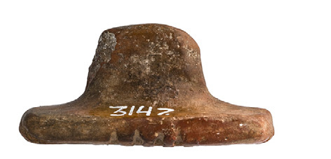
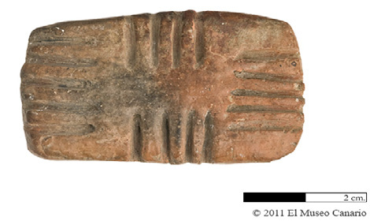
Fig. 2.1. Elementos constitutivos
Dorso Laterales Campo
Apéndice Cuerpo
Campo
Los 214 ejemplares que componen el conjunto material se agrupan en 183 matrices simples, 2 dobles –con un campo en cada uno de sus extremos–, y 29 fragmentos sin adscripción (fig. 2.2).
Desde el punto de vista de la conservación (fig. 2.3), 16 pintaderas se preservan íntegras, 96 completas con pérdidas leves, 25 completas con pérdidas que no sobrepasan el 50% del objeto, y 77 fragmentarias que, al conservar menos del 50% de la pieza originaria, aportan información dispersa.
Desde la perspectiva de la restauración, 9 pintaderas fueron reconstruidas durante el primer tercio del siglo XX con reintegraciones que abarcaron desde un 10% hasta un 50% del objeto (fig. 2.4).
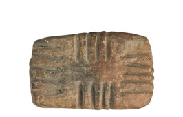
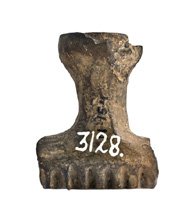
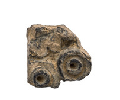
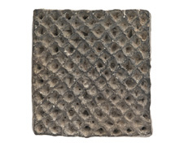
Fig. 2.2. Clasificación de las pintaderas
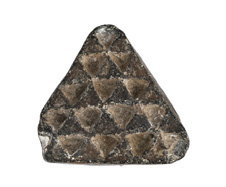
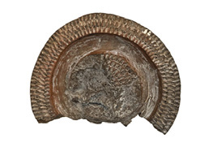
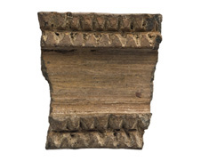
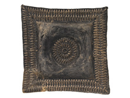
Fig. 2.3. Estado de conservación
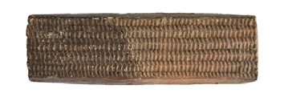
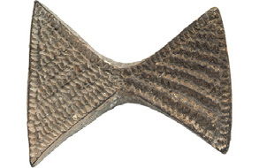
Fig. 2.4. Porcentajes de reconstrucción
Los cuerpos de las 183 matrices simples poseen formas geométricas (véase Tabla 2.1 del Anexo). Con frecuencia, rectangular (77 pintaderas), cuadrada (34), circular (29) y triangular (29); en ocasiones, triángulos opuestos por el vértice (4), rómbica (3), trapecial (2), de tendencia trapecial (1), rombos opuestos por un vértice (1), hexagonal cóncava (1), biojival (1) y compuesta (1). Los cuerpos de las 2 matrices dobles adoptan algunas de las formas enunciadas en las matrices simples: circular y rectangular (registros 3128 y 29487).
La relación de estas formas con la procedencia de las pintaderas es la siguiente1:
| Forma matriz simple | Cantidad | Procedencia |
|---|---|---|
| Rectangular | 77 | Agaete (1), Agüimes (6), Artenara (2), Arucas (1), Gáldar (5), Guía (1), La Aldea de San Nicolás (13), Las Palmas de Gran Canaria (2), Santa Brígida (2), Tejeda (1), Telde (4) y sin procedencia (39) |
| Cuadrada | 34 | Agaete (1), Agüimes (5), ¿Agüimes? (5), Gáldar (2), La Aldea de San Nicolás (2), Las Palmas de Gran Canaria (1), San Bartolomé de Tirajana (1), Santa Lucía (2), Telde (1) y sin procedencia (14) |
| Circular | 29 | Agaete (3), Agüimes (5), Artenara (2), ¿Gáldar? (1), La Aldea de San Nicolás (4), Santa Brígida (1), Telde (2) y sin procedencia (11) |
| Triangular | 29 | Agaete (1), Agüimes (4), La Aldea de San Nicolás (8), Telde (2) y sin procedencia (14) |
| Triángulos opuestos por un vértice | 4 | Agüimes (1), La Aldea de San Nicolás (1) y sin procedencia (2) |
| Rómbica | 3 | Gáldar (1), Santa Brígida (1) y sin procedencia (1) |
| Trapecial | 2 | Agüimes (1) y Artenara (1) |
| Tendencia trapecial | 1 | Arucas |
| Rombos opuestos por un vértice | 1 | Guía |
| Hexagonal cóncava | 1 | Arucas |
| Biojival | 1 | Sin procedencia |
| Compuesta | 1 | Sin procedencia |
| Forma matriz doble | Cantidad | Procedencia |
|---|---|---|
| Rectangular + circular | 2 | La Aldea de San Nicolás (1) y sin procedencia (1) |
Por su parte, la relación de la procedencia con las formas de las 214 pintaderas, es la que se muestra a continuación:
| Procedencia | Cantidad | Forma |
|---|---|---|
| Agaete | 7 | Rectangular (1), cuadrada (1), circular (3), triangular (1) y fragmento (1) |
| Agüimes | 22 | Rectangular (6), cuadrada (5), circular (5), triangular (4), triángulos opuestos por un vértice (1) y trapecial (1) |
| ¿Agüimes? | 5 | Cuadrada (5) |
| Artenara | 6 | Rectangular (2), circular (2), trapecial (1) y fragmento (1) |
| Arucas | 3 | Rectangular (1), tendencia trapecial (1) y hexagonal cóncava (1) |
| Gáldar | 10 | Rectangular (5), cuadrada (2), rómbica (1) y fragmento (2) |
| ¿Gáldar? | 1 | Circular |
| Guía | 2 | Rectangular (1) y rombos opuestos por un vértice (1) |
| La Aldea de San Nicolás | 37 | Rectangular (13), cuadrada (2), circular (4), triangular (8), triángulos opuestos por un vértice (1), fragmento (8) y doble (1) |
| Las Palmas de Gran Canaria | 3 | Rectangular (2) y cuadrada (1) |
| San Bartolomé de Tirajana | 2 | Cuadrada (1) y fragmento (1) |
| Santa Brígida | 4 | Rectangular (2), circular (1) y rómbica (1) |
| Santa Lucía | 3 | Cuadrada (2) y fragmento (1) |
| Tejeda | 1 | Rectangular |
| Telde | 11 | Rectangular (4), cuadrada (1), circular (2), triangular (2) y fragmento (2) |
| Sin procedencia | 97 | Rectangular (39), cuadrada (14), circular (11), triangular (14), triángulos opuestos por un vértice (2), rómbica (1), biojival (1), compuesta (1), indeterminable (1), fragmento (12) y doble (1) |
Respecto a las dimensiones de los campos, éstas oscilan entre 19 mm x 22 mm (registro 3035) y 41 mm x 98 mm (registro 3160), interviniendo las técnicas decorativas en el tamaño final de los mismos. Sin embargo, es su área la que permite diferenciar en las pintaderas los tamaños pequeño (registro 3035), mediano (registro 3039) y grande (registro 3049), correspondiendo el primero a aquellas matrices con campos inferiores a 6 cm² (26 pintaderas de 132 extraídas de las 137 conservadas en estado íntegro o completo con pérdidas), el segundo a las que poseen áreas comprendidas entre 6 y 23 cm² (74), y el tercero a las que superan los 23 cm² (32).
Asimismo, los 216 perfiles de los campos –recuérdese que son 214 pintaderas, entre ellas 2 dobles– presentan tres tipos de contornos (fig. 2.5): de tendencia plana (136), de tendencia cóncava (48) y plano (10). En los ejemplares fragmentarios restantes (22) no ha sido posible determinar su perfil. No obstante, y pese a esta diferencia estadística, los perfiles apenas se distinguen entre sí y no están asociados a un tamaño, forma o técnica decorativa determinados. Es más, aparentan estar relacionados con el carácter manual del modelado, pues estas piezas de reducidas dimensiones requieren poco más que las palmas de las manos para su elaboración.
En relación con los apéndices, éstos son elementos plásticos que sobresalen de la superficie del cuerpo de la pintadera cuya función es facilitar la sujeción del objeto. Se localizan siempre en el centro del dorso3082, 3083, 3089, 3091, 3092, 3116 y 3124), el apéndice se dispone en el sentido de la diagonal y diagonal mayor, respectivamente, lo que aumenta el espac…">2, salvo en seis ejemplares en los que el apéndice se desplaza y contacta, o casi contacta, con uno de los laterales (registros 3033, 3037, 3043, 3047, 3048 y 3052); en otros tres ejemplares el desplazamiento es accidental, fruto de una rotura durante el proceso de elaboración con consecuente pérdida parcial del cuerpo (registros 3108, 3123 y 3135)3.
Del estudio de dicho proceso se deduce que los apéndices pudieron añadirse o elaborarse a partir de un bloque de pasta arcillosa en el que a un tiempo se trabajó la pieza en su totalidad. En este segundo caso, estas partes accesorias dependen de la forma y tamaño del cuerpo de la pintadera. De esta manera, aquéllas de tamaño mediano y pequeño con formas preferentemente triangulares, rómbicas y circulares se realizarían partiendo de una única masa de barro que, una vez modelada, se alisaría mediante movimientos verticales desde el apéndice hacia el cuerpo, confiriendo a la pintadera laterales apenas perceptibles (registro 3059).
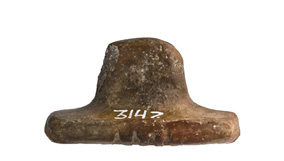
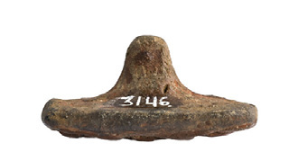
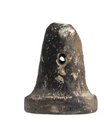
Fig. 2.5. Tipos de perfil
Tendencia plana Tendencia cóncava Plano
Los apéndices son macizos o muestran una perforación cilíndrica (fig. 2.6). De las 214 pintaderas, 98 poseen apéndices perforados, 26 sin perforar, 15 sólo los conservan de manera parcial tras alguna pérdida sufrida en ellos, 34 preservan solamente los arranques de los mismos, 39 responden a fragmentos que no aportan información sobre este elemento plástico, y 2 corresponden a las matrices dobles.
La relación de los 124 apéndices macizos y perforados con las formas y procedencias de las pintaderas es la siguiente:
En 26 apéndices macizos:
| Forma del cuerpo | Cantidad | Procedencia |
|---|---|---|
| Rectangular | 11 | Artenara (1), Gáldar (2), Las Palmas de Gran Canaria (2) y sin procedencia (6) |
| Cuadrada | 1 | Sin procedencia |
| Circular | 5 | Agüimes (1), Telde (2) y sin procedencia (2) |
| Triangular | 6 | La Aldea de San Nicolás (2), Telde (1) y sin procedencia (3) |
| Triángulos opuestos por un vértice | 2 | La Aldea de San Nicolás (1) y sin procedencia (1) |
| Biojival | 1 | Sin procedencia |
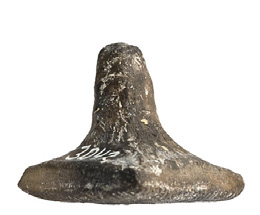
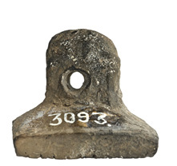
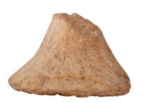
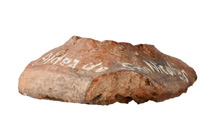
Fig. 2.6. Tipos de apéndice
Macizo Perforado Parcial Arranque
En 98 apéndices perforados:
| Forma del cuerpo | Cantidad | Procedencia |
|---|---|---|
| Rectangular | 33 | Agaete (1), Agüimes (4), Artenara (1), Arucas (1), Gáldar (3), Guía (1), La Aldea de San Nicolás (4), Santa Brígida (1), Telde (2) y sin procedencia (15) |
| Cuadrada | 24 | Agaete (1), Agüimes (3), ¿Agüimes? (5), Gáldar (2), La Aldea de San Nicolás (1), Las Palmas de Gran Canaria (1), Santa Lucía (1), Telde (1) y sin procedencia (9) |
| Circular | 20 | Agaete (2), Agüimes (3), Artenara (2), ¿Gáldar? (1), La Aldea de San Nicolás (3), Santa Brígida (1) y sin procedencia (8) |
| Triangular | 11 | Agüimes (2), La Aldea de San Nicolás (3) y sin procedencia (6) |
| Triángulos opuestos por un vértice | 2 | Agüimes (1) y sin procedencia (1) |
| Rómbica | 3 | Gáldar (1), Santa Brígida (1) y sin procedencia (1) |
| Trapecial | 1 | Agüimes |
| Tendencia trapecial | 1 | Arucas |
| Rombos opuestos por un vértice | 1 | Guía |
| Hexagonal cóncava | 1 | Arucas |
| Fragmento | 1 | Sin procedencia |
En lo concerniente a los 98 apéndices perforados, sus orificios no presentan síntomas aparentes de desgaste –como tampoco se muestran en las asas de los recipientes cerámicos–, pero sí las huellas de la ejecución de la perforación4. Así, 78 conservan las trazas instrumentales de la perforación y 45 las rebabas (registro 3161).
Estos orificios son recursos funcionales que permiten la suspensión del objeto, revelándose también en los elementos de aprehensión de algunos recipientes cerámicos (registro 3259). Se localizan en el punto medio del apéndice, cuando no se aproximan al extremo del mismo en el caso de aquéllos más largos, con una orientación horizontal paralela al dorso. La perforación atraviesa el lado mayor siempre que se ejecuta en apéndices con secciones de tendencias elípticas o rectangulares.
Del estudio de dichas secciones se desprende una preferencia por las tendencias rectangulares (76 de 106 apéndices analizables) frente a las circulares (17), elípticas (7) y cuadradas (2). En las restantes (4), la dificultad para diferenciar las tendencias rectangulares de las elípticas ha derivado en la calificación de indeterminable.
Esta preferencia por las tendencias rectangulares no guarda relación con las formas y dimensiones de los cuerpos, si bien es cierto que la mayoría de las piezas que conservan apéndices válidos para extraer este tipo de datos corresponde al tamaño medio, al igual que sucedía con las áreas de los campos. De las 76 secciones de tendencia rectangular aludidas, 27 pertenecen a formas rectangulares (2 pequeñas, 12 medianas, 9 grandes y 4 sin posibilidades de cálculo), 23 a cuadradas (1 pequeña, 15 medianas, 6 grandes y 1 sin posibilidad de cálculo), 13 a circulares (3 pequeñas, 6 medianas, 3 grandes y 1 sin posibilidad de cálculo), 4 a triangulares (1 pequeña, 2 medianas y 1 grande), 2 a rómbicas (pequeñas), 2 a triángulos opuestos por el vértice (medianas), 1 a biojival (mediana), 1 a tendencia trapecial (mediana), 1 a hexagonal cóncava (mediana), 1 a rombos opuestos por un vértice (grande) y 1 a un fragmento sin adscripción a ninguna forma ni tamaño. De las 17 secciones de tendencia circular, 6 pertenecen a formas circulares (1 pequeña, 4 medianas y 1 sin posibilidad de cálculo), 5 a triangulares (4 pequeñas y 1 mediana), 4 a rectangulares (2 pequeñas y 2 medianas), 1 a cuadrada (mediana) y 1 a triángulos opuestos por el vértice (pequeña). De las 7 secciones de tendencia elíptica, 4 pertenecen a formas triangulares (3 pequeñas y 1 mediana), 2 a rectangulares (grandes) y 1 a cuadrada (sin posibilidad de cálculo del tamaño). Y de las 2 secciones de tendencia cuadrada, 1 pertenece a la forma cuadrada (pequeña) y 1 a la circular (mediana). (Véase Tabla 2.2 del Anexo).
Por otra parte, la transición entre el cuerpo y el apéndice ha sido clasificada en tres variantes (fig. 2.7): transición estricta, transición somera y sin transición, entendiéndose la primera si ambas partes se diferencian claramente entre sí; la segunda, cuando enlazan dificultándose su distinción; y la tercera, si el apéndice confluye en los bordes del campo.
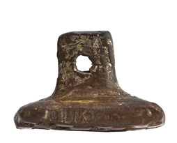
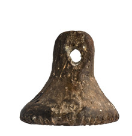
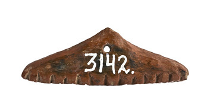
Fig. 2.7. Tipos de transición cuerpo-apéndice
2.2. EL PROCESO DE ELABORACIÓN
De este modo, 126 pintaderas responden al primer tipo, 40 al segundo, 6 al tercero y en 44 ocasiones no se ha podido determinar por su carácter fragmentario. Esta transición se asocia siempre, como ya se ha mencionado, al tamaño y, de manera preferente, a la morfología del objeto. Así, aquellas pintaderas de dimensiones mayores responden al primer tipo y nunca al segundo; las medianas se reparten entre los dos primeros tipos si bien predominan en el primero; y las pequeñas, por último, se adscriben por lo general al segundo modelo, aunque en algunos casos concretos se ajusten al primero. Salvo excepciones, las formas rectangulares y cuadradas tienden a responder al primer tipo, y las formas triangulares, rómbicas y circulares de tamaño medio y reducido al segundo. En este sentido, sirvan como ejemplos de lo expresado las dos pintaderas dobles, ya que poseen transiciones estrictas para sus cuerpos rectangulares y someras para los circulares, originando en la suma estadística concerniente a esta cuestión dos registros por encima del total del conjunto material (216 transiciones).
Respecto a las pintaderas sin transición, 4 poseen apéndices con formas piramidales de sección rectangular (registros 3140, 3142, 3143 y 3229) y 1 con forma semicircular también de sección rectangular (registro 42902)5 que, dada la estrechez del cuerpo, aportan estabilidad a la sujeción del objeto durante el proceso de aplicación de las técnicas decorativas –lo que no implica que todas las piezas realizadas en formato alargado dispongan de este tipo de apéndices (registro 3136: vistas frontal y lateral)–.
En definitiva, esta relación entre los cuerpos y apéndices con las formas y tamaños de las pintaderas viene dada, como ya se ha citado, por el proceso de elaboración del objeto, pues en algunas piezas medianas y pequeñas resulta natural modelar el apéndice a partir de una única masa de barro, además de ser eficaz para sujetar con firmeza la matriz durante los procesos posteriores al modelado –acabados y decorados–.
Por su parte, las dimensiones del eje de las pintaderas –desde el campo hasta el extremo del apéndice–, varían desde 15 mm hasta 40 mm, siendo la tónica del conjunto las medidas que oscilan entre los 20 y los 30, teniendo lugar alguna excepción que alcanza hasta los 54 mm (registro 3076). En líneas generales, los ejes no difieren notablemente entre sí y suele observarse un equilibrio armónico entre los tamaños de los cuerpos y las longitudes de los apéndices.
El proceso de elaboración de las pintaderas manifiesta una serie de tratamientos que en su mayoría están presentes en los procedimientos técnicos de los recipientes cerámicos. No obstante, difiere de éstos en cuestiones obvias de dimensiones y finalidades, y por tanto de conformación, de acabados, de técnicas decorativas y de tiempos de secado. Estas fases fueron contrastadas de manera experimental con prácticas personales y con las alfareras Bárbara Armas Padrón y M.ª Teresa Ríos Santana, quienes emplearon para este proyecto de investigación barro procedente de Teror, de secado más rápido y no habitual en la alfarería tradicional de Gran Canaria.
El proceso se inicia con la preparación de la pasta arcillosa, facilitada por las alfareras, quienes además indicaron los pasos necesarios para obtener la mezcla: extracción del barro, secado, machacado, limpieza de piedras e impurezas, sumersión en agua, amasado o mezclado con arena de barranco fina o gruesa según sea el fin –desgrasantes–, pisado, reposado y almacenamiento. En relación con los desgrasantes empleados en las pintaderas, éstos no se aprecian a simple vista en la mayoría de ellas, salvo en seis en que son visibles coincidiendo con zonas de fracturas o erosionadas, y en cuatro en los que sorprende la abundancia y tamaño de los mismos (registros 3042, 3076, 3132 y 32422)6.
Una vez preparada la mezcla, se toma una pequeña masa de un bloque de pasta arcillosa que se modela en un tiempo breve –minutos–, que puede ser prolongado mediante el humedecido de la pasta. De manera inmediata y rápida, se regulariza la superficie del objeto (fotografía de modelado), sirviendo para ello los dedos de la mano. Esta regularización se conoce como alisado (fotografía de alisado), y su ausencia se ha denominado acabado grosero7, caracterizado por superficies irregulares, rugosas o grumosas sin trazas del trabajo posterior a excepción de la técnica del bruñido (fotografía de grosero, y registros 3089 y 3102).
No se ha realizado distinción entre alisado y alisado tosco, como es habitual en los estudios de recipientes cerámicos, dada la dificultad para establecer los límites de estos tratamientos en piezas de reducido tamaño. Sin embargo, es preciso señalar que la mayoría de los alisados de las pintaderas corresponden a toscos, existiendo gran dificultad para diferenciarlos del acabado grosero antes citado. La diferencia entre ambos tipos de alisado estriba en el interés que se aplica en uniformar el objeto, de tal manera que en el primero se iguala toda o casi toda la superficie (registros 29619 y 31045), y en el segundo apenas se hace, mostrándose de manera parcial o aislada (registro 3134), con planos irregulares (registro 3087), o texturas ásperas.
Al mismo tiempo que tiene lugar la regularización de la superficie se realiza la perforación del apéndice con un elemento punzante de fuste cilíndrico (fotografía de perforación). Esta perforación produce rebabas que, en caso de así desearlo, pueden eliminarse estirándolas o retirándolas (registro 3161).
A continuación se deja secar la pieza a la sombra, con un paño superpuesto o sin él, una media de 14 horas, momento en que el barro se encontrará casi duro pero no endurecido aún. A las 18-20 horas lo estará, y ya entonces algunos de los motivos decorativos serán impracticables, concretamente las impresiones perpendiculares al campo y los motivos excisos, a excepción de la línea recta. Si por el contrario, las horas de secado empleadas fueran insuficientes, la consistencia del barro resultaría tierna y, consecuentemente, los motivos se deformarían y los útiles se mancharían acumulando pasta.
Tras este primer secado, se puede continuar regularizando la superficie del objeto, pero valiéndose ahora de útiles de trabajo con mayor consistencia como son los fustes de las espátulas de madera (fotografía de espátula). Es, además, cuando se practican las técnicas decorativas –excisión, incisión e impresión– en los campos y en algunos laterales, pues la pasta no se deformará (fotografía de bloque). Los instrumentos con que se ejecutan son punzones de madera, con puntas agudas o romas para la incisión (fotografías de incisión 1 y 2), con puntas agudas y secciones circulares, triangulares o cuadrangulares para la impresión (fotografía de impresión), y puntas en lengua de carpa para la excisión (fotografía de excisión). Los punzones óseos son válidos también para aquellas impresiones que se realizan presionando el instrumento en posición oblicua u horizontal al campo. Podrían ser aptos para las impresiones perpendiculares, pero como ya se ha citado y como se analizará en otro capítulo, éstas se realizan con objetos puntiagudos de madera con secciones circulares o en planos.
En ocasiones, estas herramientas dejan sus huellas en zonas ajenas al área de aplicación de las técnicas decorativas, habiéndose registrado este hecho accidental en 28 pintaderas (registro 2823). De la misma manera, también se han observado en estas zonas impresiones rectas y curvas, de 5 mm de longitud media, que parecen tener relación con las uñas de los dedos y la posición de los mismos (registro 3170). Estas impresiones han sido detectadas en 138 ejemplares y en algún caso su presencia es muy abundante (registro 3137).
Por otra parte, en este punto de secado también es posible desbastar si fuera necesario, requiriendo esta acción un elemento de filo cortante.
Finalizados los motivos decorativos en las pintaderas, tiene lugar, si así se pretende, la aplicación de la pintura roja a base de almagre8 que puede extenderse de diversas maneras: frotando con los dedos o con fragmentos de cuero para facilitar su penetración, cuando se hace sobre cualquier superficie lisa (registro 3175), y pintando con posibles pinceles de pelos o cerdas en el caso de las trazas de la incisión (registro 3108) o de las huellas de la impresión (registro 3035).
Si lo que se desea es bruñir, se deja secar la pieza una vez más un mínimo de 10 horas –segundo secado–. La técnica del bruñido, que se ejecuta frotando de manera intensa y continua la pasta en estado muy duro con un objeto contundente –un canto rodado, por ejemplo–, pule la superficie dotándola de brillo (registro 3120). La pasta arcillosa está en el punto adecuado si no mancha el bruñidor durante la frotación. En caso contrario, los restos de pasta frenarían los movimientos direccionales del bruñido, situación ante la cual se debería aumentar el tiempo de secado. Esta técnica conlleva poco tiempo, de segundos a minutos, en función de la calidad que pretenda su ejecutor. Con todo, la pieza deberá someterse a más horas de secado con objeto de extraer la totalidad de su humedad.
El proceso de elaboración finaliza con la cocción, fase en la que se somete el objeto a una temperatura que lo deshidrata y transforma en cerámica.
De acuerdo con lo señalado hasta ahora, la secuencia tecnológica de la producción prehispánica de pintaderas es la siguiente:
| Tratamiento | Localización | Instrumento | Estado de la mezcla | Ejecución |
|---|---|---|---|---|
| Alisado o acabado grosero | En laterales, dorsos y apéndices | Semiblando (dedos, por ejemplo) | Sobre pasta semidura (cuando la pieza aún conserva la humedad) | Se practican a continuación del modelado |
| Excisión, incisión e impresión | En campos, y en laterales ocasionalmente en el caso de la impresión | Duro (punzones) | Sobre pastas casi duras (cuando estas ya no se deforman) | Se practican a las horas de secado |
| Pintura roja o con almagre | En cualquier superficie (campos, laterales, dorsos y apéndices) | Útiles diversos (dedos, cueros, pelos...) | Ídem | Ídem |
| Bruñido | En cualquier superficie (campos, laterales, dorsos y apéndices) | Superficies lisas de elementos contundentes (cantos rodados, punzones…) | Sobre pastas muy duras | Se practica al día o días de secado |
En relación con los citados tratamientos, en general se constata la convivencia de éstos sobre un mismo ejemplar, aunque hay matrices que presentan uno solo de ellos, por ejemplo el acabado grosero. De esta manera: un bruñido puede revelarse en una zona –lateral/laterales9– al tiempo que se observa un alisado o un acabado grosero en otras áreas del mismo objeto –dorso y apéndice–; una técnica puede manifestarse sólo mediante un gesto o una huella, tal es el caso de un alisado presente en un lateral de cuatro, y de un bruñido parcial en un dorso; y un tratamiento repartido por la superficie de una pintadera puede aparecer cubriendo la misma de manera aislada, parcial o total, siendo esto habitual en los bruñidos (registro 3091).
El análisis de las pintaderas nos revela los siguientes datos: 71 presentan acabados groseros, 198 alisados (en su mayoría toscos), 202 bruñidos (de los que sólo 40 han sido realizados abarcando el total o casi la totalidad de la superficie, mientras que en 162 está presente de manera aislada o parcial), y 46 pintura roja (de las que 5 no la poseen extendida sino mediante manchas dispersas). En 28 casos se ha dudado sobre la coloración rojiza de la pasta (si se trata de la propia pintura, del color del barro, o de la cocción, aunque nos inclinamos por las dos últimas), y en 10 no se ha podido extraer información al respecto por el carácter fragmentario de las piezas (4 fragmentos no conservan ninguna superficie tratada para percibirlo; 5 carecen de capas exteriores por la erosión sufrida, y 1 no permite valorar dato alguno por su reducido tamaño). Como es evidente, la suma de estas cifras, 555, dobla y supera la cantidad que compone la colección de pintaderas (214), y ello se debe, como ya se ha apuntado, a la convivencia de los acabados en una misma pieza.
Esta diversidad permite definir la secuencia tecnológica de las pintaderas, pero a la par dificulta la toma de datos de los tratamientos, ya que a la hora de valorar cada una de las técnicas es necesario considerar el objeto en cada una de sus secciones –campo, lateral/laterales, dorso y apéndice–.
| Apéndice | Dorso | Laterales | Campo | |
|---|---|---|---|---|
| Acabado grosero | 53 | 39 | 32 | 0 |
| Alisado* | 94 | 167 | 188 | 0 |
| Bruñido** | 80 | 134 | 168 | 186 |
| Pintado | 17 | 19 | 28 | 31 |
| Pintura/pasta/cocción | 8 | 11 | 14 | 18 |
- Recuérdese que la mayoría de los alisados son toscos
** Recuérdese que la técnica del bruñido está presente de manera completa sólo en 40 pintaderas
Una vez desglosado el estudio de cada parte de las pintaderas, los datos reflejan una superioridad en el empleo de las técnicas del alisado y del bruñido; y una preferencia zonal, con predominio de los laterales y de los campos, que a fin de cuentas son las áreas de trabajo y de acabado más cómodas durante su proceso de elaboración. En definitiva, la pluralidad de tratamientos que acoge una misma pieza y la abundancia de pintaderas con acabados que pudieron haber sido perfeccionados, revelan una falta de interés de mejora de los mismos que radica, a nuestro parecer, en primar el fin para el que fueron concebidos estos objetos. Corrobora esta hipótesis la existencia de ejemplares elaborados muy probablemente por principiantes, así como de piezas que se fracturaron durante el procedimiento tecnológico. En cualquiera de estos dos casos, las dificultades que se presentaron no impidieron la conclusión de sus respectivos procesos de elaboración y, por tanto, no afectaron a la finalidad para la que fueron creadas estas manufacturas cerámicas.
2.3. LAS TÉCNICAS DECORATIVAS
Las técnicas decorativas (excisión, incisión e impresión) que se observan en las pintaderas realizadas sobre barro cocido y conservadas en El Museo Canario, son tratamientos que se practicaron sobre el cuerpo de estos objetos, concretamente en su campo y en ocasiones en los laterales, con anterioridad a la cocción. Su ejecución tuvo lugar una vez modelada la pieza en su totalidad y expuesta a un proceso de secado por el cual la pasta arcillosa eliminó parte de su humedad, alcanzando un punto de dureza conocido como “dureza de cuero”. Es en este punto intermedio de resistencia del barro cuando se aplican los motivos decorativos.
La excisión desarrollará oquedades delimitadas, la incisión diseños longitudinales, y la impresión motivos impresos. En cualquiera de estos procedimientos, especialmente en la impresión, la calidad dependerá de varios factores: de la mezcla arcillosa (desgrasantes finos o gruesos), del punto de secado (tierno o duro), del útil empleado (tamaño y forma), y del modo de ejecución (posición del útil y de la pintadera, precisión o habilidad y repasos). El orden de exposición de estas técnicas será el de su procedimiento tecnológico.
2.3.1. Excisión
La excisión consiste en extraer pasta arcillosa de la superficie endurecida del barro para configurar motivos en bajorrelieve. En las pintaderas en las que se detecta esta técnica (60), la excisión se realiza con un objeto duro y apuntado, complementado con alguno de punta en lengua de carpa, que trabaja trazando primero y excavando después con el fin de obtener diseños geométricos. De esta manera, la excisión genera en el campo de estas matrices oquedades geométricas delimitadas por perfiles excavados.
Los diseños que se practican (véase Tabla 2.3 del Anexo) son: la línea recta (registro 3182), líneas rectas paralelas (registro 31045), línea quebrada (registro 3173), circunferencia (registro 3056), círculo (registro 3080), ángulo (registro 3051), triángulo (registro 3034), cuadrado (registro 3083), rectángulo (registro 3160), rombo (registro 3172) y romboide (registro 3037). Estos diseños se reproducen con frecuencia, con mayor o menor precisión (registros 3122 y 3172), y se documentan en diferentes términos municipales de la geografía insular.
Asimismo, la excisión se desarrolla mediante un único tema, repetido tantas veces como se desee y permita la superficie del campo, o combina diferentes diseños de manera ocasional (registros 3162 y 3037).
Exclusivamente, afecta a las dimensiones de las pintaderas (véase referencia a las dimensiones en página 40). De este modo, aparece representada en 2 de tamaño pequeño, a caballo éstas entre las pequeñas y medianas, en 11 medianas y en 20 grandes.
En muchos de los casos, estos motivos y la morfología de los cuerpos de las pintaderas guardan una estrecha relación (véase Tabla 2.4 del Anexo). Tanto es así que líneas rectas y quebradas tienden a realizarse sobre formas rectangulares (registros 3168, 3161 y 3173), circunferencias sobre circulares (registro 3053), triángulos, ángulos y romboide sobre triangulares y trapeciales (registros 3034, 3049, 3037 y 3122), triángulos y cuadrados sobre cuadradas (registros 3082 y 3083), y rombos sobre rectangulares y hexagonal cóncava (registros 3162 y 3172). En esta asociación técnica y formal, algunas de las figuras poligonales registradas se realizan sirviéndose del borde del campo, y como consecuencia de ello dejan abierto alguno de sus lados (registros 3122 y 3160). En estos supuestos, por tanto, las figuras carecen de uno de sus perfiles.
La técnica de la excisión convive con otras, principalmente con la incisión e impresión (47) y, en ocasiones, sólo con la impresión (9) o con la incisión (2); de manera excepcional se revela sin compañía (2).
De los 60 ejemplares en los que está presente la excisión, 15 muestran pintura roja (aunque uno no manifiesta pintura extendida sino manchas aisladas). En todos los casos, esta aplicación colorante sobre piezas con diseños excisos convive de manera simultánea con las técnicas de la incisión y la impresión.
En cuanto a la relación del motivo exciso excavado en el cuerpo de una pintadera y su huella impresa tras el ejercicio de la estampación, esta acción siempre aportará diseños delimitados: en altorrelieve cuando la pintadera se estampa sobre una superficie tierna (barro), y huecos cuando se imprime sobre una superficie dura (piel animal manufacturada) o semidura (piel humana).
Por otra parte, en algunas pintaderas se observa una apariencia de excisión fruto de la necesidad de limpiar la materia sobrante para definir las figuras que se desean obtener cuando se aplican otras técnicas (registros 3079 y 3090). Se trata tan solo de efectos, causados por la cantidad de pasta extraída, que no desarrollan motivo alguno.
2.3.2. Incisión
La incisión consiste en desplazar sobre la superficie endurecida del barro, y en un sentido lineal, un objeto duro y apuntado que arrastra materia a su paso. Los diseños lineales resultantes, por tanto, se corresponden con el recorrido del útil que los genera.
En las pintaderas en que se detecta esta técnica (143), las incisiones son excepcionalmente superficiales (registro 3064), profundas (registro 3068) o muy profundas (registro 7838), y poseen una sección en V (registro 3154) o en U (registro 3108), no siempre detectable debido al número de repasos que se haya realizado –a mayor cantidad de repasos, mayor extracción de pasta–.
Asimismo, las incisiones abarcan la totalidad del campo (registro 3148) o se extienden de manera parcial (registro 3147); se ejecutan con mayor o menor precisión (registros 3114 y 3116), y se desarrollan mediante un único tema, repetido tantas veces como se desee y permitan las dimensiones del campo (registro 3043) –a menudo en un sentido concéntrico (registro 3069)–, o combinan diferentes diseños (registros 3062 y 30767).
Los motivos geométricos incisos que se registran son los siguientes: líneas rectas paralelas (registro 3148), líneas rectas paralelas que se cruzan (registro 3120), líneas radiales (registro 3077), líneas curvas (registro 3146), líneas mixtas (registro 3127), líneas quebradas o poligonales (registro 3204), ángulos (registro 3043), ángulos opuestos por el vértice (registro 3126), triángulos (registro 3050), rombos (registro 3124), biojivas (registro 3121) y circunferencias (registros 3069 y 3062). (Véase Tabla 2.5 del Anexo).
En la mayoría de los casos, los motivos y la morfología de los cuerpos de las pintaderas mantienen una estrecha relación. Así pues, circunferencias incisas se realizan sobre formas circulares (registro 3063), triángulos y ángulos sobre triangulares (registros 3050 y 3043), y líneas rectas paralelas y perpendiculares a ellas sobre cuadradas o rectangulares (registros 3120 y 3145). Ejemplos extremos son las líneas rectas paralelas y secantes convergentes sobre una forma triangular (registro 3052), las líneas rectas paralelas y secantes paralelas sobre una triangular (registro 3202), biojivas sobre una biojival (registro 3121), y los rombos sobre una rómbica (registro 3124).
La incisión se emplea de manera exclusiva en 27 pintaderas (registro 3148); se relaciona con la impresión en 67 (registro 3039), y ambas con la excisión en 47 (registro 3034); excepcionalmente, en 2 casos, coexisten la incisión y la excisión (registros 3149 y 3173). En la combinación técnica dual incisión-impresión tienen lugar diferentes niveles de asociación: un acompañamiento en el que la incisión es el tratamiento destacado (registro 3068); una convivencia en la que ambos recursos son protagonistas (registro 3125); una conjugación en la que la incisión sirve de guía a la impresión perpendicular (registro 3130), o de apoyo a las impresiones de sección angular o redondeada (registro 3039) que, de disponerse enfrentadas, hacen perder altura y protagonismo visual a las incisiones (registro 3103); y, por último, una alianza entre la incisión y la impresión en la que la primera duplica el motivo longitudinal de la segunda (registro 11042). (Véanse Tablas 2.6-2.13 del Anexo).
De los 143 ejemplares en los que está presente la incisión, sólo 37 muestran pintura roja (aunque cuatro no manifiestan pintura extendida sino manchas aisladas), que se reparten de la siguiente manera: 6 corresponden a la incisión, 16 a la incisión relacionada con la impresión, y 15 a la incisión asociada con la impresión y la excisión.
La incisión desarrolla variados motivos cuando se combina con otras técnicas: línea recta (registro 11042), líneas rectas (registro 3166), líneas rectas paralelas (registros 3039 y 3167), diagonales (registro 3091), ángulos (registro 3049), ángulos opuestos por el vértice (registros 3134 y 3149), triángulo (registro 3045), triángulos opuestos por el vértice (registro 3133), cuadrados (registros 3083 y 3091), cuadrángulos (registro 3129) y circunferencias (registro 3056). En general, se constata la frecuente reproducción de los motivos incisos, ya sean en solitario o con otras técnicas, en las pintaderas procedentes de los diferentes municipios insulares.
La relación entre los diseños y la morfología de los cuerpos de las pintaderas guarda un patrón geométrico: circunferencias sobre formas circulares (registro 3056), triángulos y ángulos sobre triangulares (registros 3045 y 3049), y cuadrados sobre cuadradas (registro 3083). No obstante, parece existir una preferencia por el trazado de las líneas rectas en las formas poligonales (registros 3039 y 3098).
En este tipo de combinación técnica, los motivos se desarrollan mediante un único tema (registro 3039), a menudo en un sentido concéntrico (registro 3083), o combinan diferentes diseños (registros 3086 y 3089), ejecutándose con mayor o menor profundidad (registros 3087 y 3091).
Los motivos incisos son semejantes a los diseños geométricos de los recipientes cerámicos, especialmente los de aquéllos destinados al servicio: líneas paralelas (registros 281 y 726), líneas rectas paralelas que se cruzan (registro 219), líneas radiales (registro 514), líneas curvas (registro 387), líneas quebradas (registro 463), ángulos (registros 151 y 162), triángulos (registros 257 y 593), ángulos y triángulos (registro 749), triángulos y líneas paralelas (registro 242), triángulos y circunferencias concéntricas (registros 365 y 647), circunferencias concéntricas y cuadrado (registro 515), cuadrados y triángulos (registro 176), círculos (registro 278), círculos y ángulos (registro 3770), círculos y triángulos (registro 240), rombos (registro 156), entre otros, que en ocasiones, y al igual que en las pintaderas, pueden verse afectados por una mayor o menor destreza de la persona ejecutora (registros 156 y 274).
Un caso particular de las incisiones se produce cuando éstas se trazan de modo exclusivo para guiar la práctica de otra técnica, concretamente para conducir a la impresión perpendicular. En estos casos (21), su presencia no siempre se aprecia, pues la segunda técnica tiende a eliminar las coordenadas incisas, aunque en ocasiones muestren restos de su existencia (registros 3096 y 3156). En estos supuestos, la incisión no define el motivo de la pintadera dado que la técnica posterior es la que prevalece, pese a que para su ejecución se haya servido de la incisión. A la inversa, se ha detectado un solo caso en el que las impresiones de sección angular sirvieron de guía a la incisión (registro 3145).
Finalmente, tras el ejercicio de la estampación, la relación del motivo inciso realizado sobre el cuerpo de una pintadera y su huella impresa siempre aportará diseños delimitados: en altorrelieve cuando la pintadera se estampa sobre una superficie tierna (barro), y huecos cuando se imprime sobre una superficie dura (piel animal manufacturada) o semidura (piel humana).
2.3.3. Impresión
La impresión consiste en presionar con un objeto la superficie endurecida del barro. Dicho objeto puede ser de naturaleza humana (uña o yema del dedo) o de otra índole (concha, cuerda, punzón). La impronta resultante se corresponde con el elemento o útil que presiona, siendo esta huella la que define convencionalmente la técnica (impresión ungular, digital, cardial, cordada o de cestería, cuneiforme, etc.). A diferencia de las técnicas analizadas con anterioridad, en la impresión no hay extracción o arrastre de pasta arcillosa, sino tan sólo desplazamientos de la misma. Sin embargo, en función de las dimensiones del cuerpo sobre el que se ejerce la presión, del útil empleado (liviano o contundente), de la potencia de la persona que presiona (suave o fuerte), y de la profundidad de la presión, pueden tener lugar acumulaciones considerables de pasta que requieran de pequeños recortes o desbastados en las paredes de dicho cuerpo.
En las pintaderas en las que se detecta esta técnica (184), las impresiones se realizan con un objeto duro y apuntado que se presiona mediante diferentes usos posicionales (fig. 2.8): en la mayoría de ellas, de manera perpendicular u oblicua al campo (registros 3172 y 3039); en menor medida, en posición perpendicular u oblicua al plano inferior del campo –en disposición inversa a la anterior–, en cuyo caso se localizan específicamente en los laterales de estas matrices (registro 3097); y, en ocasiones, en sentido horizontal al campo, supuestos en los que sólo se ejecutan sobre cuerpos longitudinales (registros 3137 y 3150) o, cuando éstos no lo son, en los bordes de los campos (registro 3036), zona en la que a veces resulta fácil confundir las impresiones con incisiones.
Superior Inferior Plano
Perpendicular Oblicuo Horizontal
Fig. 2.8. Posiciones del útil empleado para la impresión
De este modo, la orientación perpendicular a la superficie del campo deja la huella completa del útil apuntado que se ha empleado, mientras que las posiciones oblicua y horizontal producen dos planos y un ángulo si la punta está tallada en biseles, o una superficie curva si es cónica.
El útil que se utiliza puede ser de punta aguda o roma, y su fuste puede poseer una sección circular o en planos. Cuando se presiona en posición frontal al campo, los de sección circular proporcionan impresiones circulares (registro 3068), que desde un punto de vista tridimensional se corresponden con huellas cónicas; y los de sección en planos confieren impresiones triangulares (registro 3172) o cuadrangulares (registro 3092), en función del número de planos, 3 ó 4, que equivalen a improntas piramidales. Sin embargo, si, como hemos mencionado con anterioridad, el punzón cónico o de tendencia similar presiona orientado en sentido oblicuo u horizontal al campo, traspasa impresiones semicónicas o de sección redondeada (registro 3046), mientras que si en la misma posición está tallado en biseles, transfiere impresiones semipiramidales o de sección angular (registro 3044). Son, por tanto, las improntas las que determinan la clasificación y denominación de las impresiones (circular, triangular, de sección angular, etc.).
En algunas ocasiones, los tipos no pueden ser definidos de manera absoluta, ya que, al tratarse de una técnica manual, conviven factores de diversa índole como son el útil empleado y el modo de ejecución de la técnica (posición, precisión o habilidad y repasos). Es el caso de las impresiones de tendencia elíptica, denominación utilizada en una sola matriz para resolver la sección de un punzón de difícil adscripción (registro 3075); o de las impresiones de tendencia cuadrangular, definición empleada en seis pintaderas para referirnos a impresiones realizadas con un útil de tres planos, y no de cuatro, que se presiona repetidas veces en un mismo lugar cambiando el punzón de posición (registro 11042). De esto último se desprende que la repetición de la impresión en un mismo lugar, con el fin de precisar una forma determinada, puede dejar en la impronta dos y hasta tres huellas de la punta del útil (registro 3143). Estas repeticiones llegan a ejemplos extremos en los que se desvirtúa la forma relegándose a una simple tendencia (registro 3139).
En definitiva, como hemos visto, la morfología del útil y el modo de ejecución determinan la tipología y denominación de las impresiones. De ahí que los motivos impresos estén siempre vinculados al útil y a la ejecución.
Una vez razonada esta cuestión, las impresiones que se detectan en las pintaderas son circulares, triangulares, cuadrangulares, de tendencia elíptica, de tendencia cuadrangular, de sección angular y de sección redondeada (véase Tabla 2.14 del Anexo). El balance de piezas que muestran esta técnica es el siguiente: impresiones circulares (30), triangulares (44), cuadrangulares (48), de tendencia elíptica (1), de tendencia cuadrangular (6), de sección angular (81) –sólo presente en los laterales en 31–, de sección redondeada (42) –sólo presente en los laterales en 3–, sin determinar la impresión por su carácter fragmentario (1) –sólo presente en el lateral–, combinando la impresión angular y redondeada (2) –sólo presentes en los laterales–, y 1 doble que se sirve también de la impresión angular y de la redondeada pero reservando un modelo para cada campo. Como es evidente, la suma total asciende a 256 ejemplares, superando el conjunto material de las pintaderas a causa de la presencia de impresiones de diferentes tipos en algunas piezas. Estos motivos se reproducen con frecuencia y se registran en diferentes términos municipales de la geografía insular.
Por otra parte, la impresión puede constituirse como la única técnica empleada, manifestada así en 61 pintaderas (registro 3033); combinarse con la incisión en 67 (registros 3134 y 3133); o coexistir ambas con la excisión en 47 (registro 31045). Una vez que la impresión se alía con la incisión tienen lugar diferentes niveles de asociación, ya enunciados en el apartado anterior. De manera excepcional, en 9 casos, conviven la impresión y la excisión (registro 3036). (Véanse Tablas 2.15 y 2.16 del Anexo).
De estos 184 ejemplares en los que está presente la impresión, sólo 40 muestran pintura roja (de los que cuatro no manifiestan pintura extendida sino manchas ocasionales), que se reparten de la siguiente manera: 9 corresponden a la impresión, 16 a la impresión asociada con la incisión, y 15 a la impresión relacionada con la incisión y la excisión.
Tal como citamos al finalizar el apartado anterior, existen 21 ejemplos en los que la impresión perpendicular al campo se sirve de la incisión, mostrando ésta restos de su uso como guía (registro 3096). En estos casos, las huellas de las coordenadas incisas no constituyen el motivo del campo. Una situación similar pero inversa, se ha detectado también en una pintadera a través de pequeñas huellas de impresiones de sección angular que fueron empleadas para guiar la técnica de la incisión (registro 3145).
En relación con la extensión de la superficie sobre la que se realizan las impresiones, éstas se desarrollan por todo el campo de la pintadera (registros 31223 y 3039). En muchas de ellas parece existir un horror vacui (registros 3093 y 3103), que se alivia cuando se combina con la excisión (registros 3104 y 3053). Sin embargo, en ocasiones, las impresiones se extienden más allá del campo, apareciendo también, en 37 ejemplares, en los laterales del cuerpo (registro 3097). Se trata de impresiones de sección angular, salvo en 3 de sección redondeada, que se ejecutan en posición perpendicular u oblicua al plano inferior del campo. Este caso particular se asocia casi siempre con campos saturados de impresiones cuadrangulares sobre cuerpos de forma rectangular (registro 3163) o cuadrada (registro 3097).
Estas impresiones de sección angular o redondeada pueden aparecer en los cuatro laterales (registro 3163) o en dos no consecutivos (registro 3165). En cualquier caso, rematan el trabajo y su presencia deriva en campos abiertos (registro 3163) o semiabiertos (registro 3165). Cuando éstos se cierran, se emplean generalmente impresiones triangulares (registros 3092 y 3180), aunque en ocasiones no suceda así (registro 3170). Asimismo, estas impresiones en los laterales poseen diferentes profundidades (registros 3163 y 3099), hasta el extremo de desvirtuar la forma original del cuerpo (registro 3129), en cuyo caso debieron de ser ejecutadas partiendo de una planificación.
De la misma manera, las impresiones perpendiculares u oblicuas presentes en el campo de estas piezas pueden ser excepcionalmente superficiales (registro 3225), poco profundas (registros 3048 y 3081), profundas (registros 3035, 3087 y 3128) o muy profundas (registros 3229, 3115 y 3129).
Respecto a la relación de la impresión perpendicular con la morfología del cuerpo de las pintaderas –de la relación de la impresión de sección angular guiada ya se habló en el apartado anterior dedicado a la incisión–, es habitual la manifestación de las impresiones cuadrangulares sobre formas cuadradas y rectangulares (registros 3092 y 3163) y, en menor medida, la de las impresiones triangulares sobre triángulos y rectángulos (registros 3033 y 3111). Del mismo modo, también se registran, aunque de manera escasa, impresiones sobre cuerpos circulares (registros 3075 y 3076) y sobre formas excepcionales como la hexagonal cóncava (registro 3172) o la compuesta (registro 3125).
Esta asociación formal y técnica llega a su culmen a través de un subgrupo compuesto por 12 pintaderas en las que la lectura que recibimos procedente de los campos se torna diferente. Por primera y única vez no son las impresiones las protagonistas sino el motivo longitudinal que generan (registro 3136). Este diseño obtenido por la técnica de la impresión, en la mayoría de los casos una línea quebrada, sólo es concebible bajo los siguientes condicionantes técnicos:
- Que el cuerpo de la pintadera sea rectangular y sus lados menores tan cortos que permitan la posición horizontal del útil (registro 3137), u oblicua al plano inferior del campo (registro 3141), para desarrollar mediante el gesto de la presión un motivo longitudinal.
- Que el cuerpo de la pintadera sea rectangular y sus lados menores tan cortos que permitan la posición oblicua al plano inferior del campo para desarrollar, mediante el gesto de la presión inclinada y frontal, impresiones cuadrangulares (registro 29487) o de tendencias cuadrangulares (registro 3139). En este caso, además, si participa la incisión, se duplican los motivos longitudinales (registro 11042) –para obtener tres o más líneas habría que recurrir a una anchura mayor y a la técnica de la incisión (registro 3204).
Por otra parte, queda abordar un asunto que con frecuencia se detecta en las impresiones; nos referimos una vez más a la ejecución y, en concreto, a la habilidad y a los repasos. De esta manera, las impresiones, capaces de reflejar hasta una tara del útil empleado y, gracias a ésta, incluso el cambio de posición del mismo (registro 3172), se realizan con precisión y claridad (registro 3172), o sufren deformaciones por la presencia de desgrasantes de gran tamaño y por el estado aún tierno del barro en el momento de recibir la presión (registro 3132). Asimismo, se degeneran durante la ejecución por una impaciencia humana de tipo rítmico (registro 3162), o se someten a repasos puntuales o constantes.
En este último sentido, los repasos, que a menudo desvirtúan los motivos impresos (registro 3096), se llevan a cabo con el punzón original o con cualquier otro (registro 3156), utilizándose en ocasiones algunos de un tamaño tan inferior que, debido a las presiones que ejercen sobre cada uno de los ángulos de la impronta primigenia, transforman la impresión proporcionándole apariencias trilobuladas o cuadrilobuladas (registro 3113). En esta línea, también se manifiestan huellas circulares en campos saturados de otro tipo de impresiones, con frecuencia cuadrangulares, en los que a veces resulta difícil discernir si el repaso fue realizado con un útil cónico o con un punzón tallado en biseles que, tras girar rápidamente, generó la apariencia de una impresión circular (registro 3189). Esta dificultad en la lectura de la huella suele estar asociada a improntas que no conservan claras sus trazas (verticales u horizontales).
Finalmente, y en cuanto a la relación del motivo impreso realizado sobre el cuerpo de una pintadera y su huella tras el ejercicio de la estampación, esta acción reportará diseños delimitados: en altorrelieve cuando la pintadera se estampa sobre una superficie tierna (barro), y huecos cuando se imprime sobre una superficie dura (piel animal manufacturada) o semidura (piel humana). Sin embargo, las impresiones de sección angular o redondeada realizadas sobre el cuerpo de una pintadera transforman el motivo original tras la estampación, produciendo triángulos alineados y, si se disponen enfrentadas, líneas paralelas o minúsculos rombos alineados. Situación análoga tiene lugar en aquellas pintaderas rectangulares con lados menores muy cortos y en las que se combina la impresión oblicua con la perpendicular, e incluso con la incisión, generando rombos alineados o líneas quebradas.
En definitiva, la impresión es una técnica de gran complejidad que se caracteriza por el útil empleado y por el modo de ejecución, constituyéndose a la par, gracias a la observación de sus improntas, en una de las más favorables para estudiar los detalles y gestos ejercidos durante el procedimiento tecnológico.
2.4. LA HABILIDAD TÉCNICA
No podemos finalizar este capítulo dedicado a las técnicas decorativas sin abordar algunos ejemplos que reflejan el factor de la habilidad, frecuentemente citado a lo largo de esta exposición.
Para esta cuestión, son muy representativas las pintaderas 3098 y 3144, ya que en ellas se observan resoluciones espontáneas acometidas durante la finalización del diseño del campo. Así, el ejecutante de la primera (cuadrada), tras la realización de las líneas rectas paralelas incisas y de las impresiones de sección angular en una misma dirección, debió de enfrentarse a un espacio vacío en un margen del campo que resolvió girando la pintadera para, mediante impresiones también de sección angular pero en disposición enfrentada, cerrar dicho campo. Y el autor de la segunda (rectangular), tras la realización de las líneas rectas paralelas incisas y de las impresiones triangulares, se arriesgó, a la hora de afrontar la última alineación de las impresiones triangulares, a una probable rotura de una de sus paredes, que evitó practicando impresiones de sección angular desde el lateral susceptible de fractura.
Por otra parte, existen pintaderas realizadas por personas carentes aún del conocimiento y destreza necesarios para ejecutar correctamente las técnicas. Algunos ejemplos son las piezas 3042, 3047 y 3071, si bien existen otras afectadas por la misma situación. Centrándonos exclusivamente en la primera, por ser el caso más extremo, observamos la dificultad de su autor para completar el campo, revelando un error propio de principiante al comenzar el diseño que pretende realizar mediante la técnica de la impresión, colocando el punzón en posición horizontal desde el borde del campo, e intentando avanzar así hacia el interior. A partir de este comienzo erróneo, las dificultades se encadenan y multiplican –se pierden referencias de cálculo visuales–, derivándose en un diseño inacabado a base de impresiones oblicuas desordenadas –el avance hacia el interior borraría las impresiones iniciadas–. La solución debió pasar por cambiar el punzón de posición.
Así pues, la habilidad artesanal de los primeros ejemplos mencionados pone de manifiesto que la producción de estas piezas debió de estar en manos de personas que adquirieron y desarrollaron el conocimiento de los procedimientos técnicos para la elaboración de las pintaderas. En relación con ello, las fuentes etnohistóricas hacen referencia a la existencia de mujeres especializadas en el trabajo del barro para la obtención de recipientes, por lo que una situación similar podría plantearse para el caso de las matrices. Por su parte, la falta de destreza, de interés y de perfección en el acabado final de los diseños de los campos que presentan algunas pintaderas revela la primacía que, en última instancia, se otorgaba a la finalidad para la que fueron concebidos estos objetos. Esta hipótesis se relaciona con la conclusión ya apuntada en los tratamientos de acabado, analizados en el apartado dedicado al proceso de elaboración.
2.5. CONCLUSIONES
Del estudio de las pintaderas realizadas en barro cocido pertenecientes a la Colección de El Museo Canario se concluye que:
- Las pintaderas son piezas de reducidas dimensiones con diversos tamaños que constan de un cuerpo y de un apéndice.
- Las formas de los cuerpos son geométricas y los motivos decorativos que acogen sus campos también. Ambos guardan una estrecha relación basada en la adaptación de los motivos a las formas.
- La elaboración de los apéndices tiende a depender de la forma del cuerpo y del tamaño de la pintadera, afectando esta dependencia a la transición entre el cuerpo y el apéndice.
- Las formas de los cuerpos y los motivos decorativos de los campos se reproducen con frecuencia y se registran en diferentes zonas geográficas de la isla.
- El proceso de elaboración de las pintaderas manifiesta una serie de tratamientos que en su mayoría están presentes en los procedimientos técnicos de los recipientes cerámicos. No obstante, difiere de éstos en cuestiones obvias de dimensiones y finalidades, y por tanto de conformación, de acabados, de técnicas decorativas y de tiempos de secado.
- Las técnicas de acabado revelan, en la mayoría de los casos, pluralidad de tratamientos en una misma pieza y falta de interés de mejora de los mismos, que posiblemente radica en primar la finalidad para la que fueron concebidos estos objetos.
- Las técnicas decorativas evidencian una diversidad de destrezas, múltiples diseños, y una preferencia por cubrir toda la superficie del campo o plano sobre el que se trabaja.
- La falta de destreza, de interés y de perfección en el acabado de algunos motivos de los campos reflejan, una vez más, la primacía que se otorgaba a la finalidad para la que fueron creadas estas manufacturas cerámicas.
- Los motivos decorativos de las pintaderas muestran semejanza con los diseños geométricos de los recipientes cerámicos, especialmente con los destinados al servicio.
- El control del proceso de elaboración de las pintaderas y la habilidad artesanal ponen de manifiesto que la producción de estas piezas debió de estar en manos de personas que adquirieron y desarrollaron el conocimiento de los procedimientos técnicos para la realización de este tipo de piezas cerámicas.
Notas al capítulo 2
- Se ha optado por el término municipal ya que es el único elemento en común que poseen estos objetos cuando se conoce su procedencia. Para mayor información, ver el apartado dedicado a los problemas de la colección del capítulo Acerca de este catálogo.
- En 7 ocasiones, y sobre 6 formas cuadradas y 1 rómbica (registros 3082, 3083, 3089, 3091, 3092, 3116 y 3124), el apéndice se dispone en el sentido de la diagonal y diagonal mayor, respectivamente, lo que aumenta el espacio disponible para su conformación. Quién sabe si acaso afectaría durante el acto de la estampación a la percepción visual de la imagen generada (registro 3083), cuestión que quizá no debiera ser sobrevalorada ya que en otras pintaderas el apéndice rota ligeramente (registro 29619).
- Ninguna de estas tres pintaderas posee el apéndice centrado. Las registradas con los números 3123 y 3135 muestran, además, sobre sus primigenias zonas de fractura unas trazas muy marcadas del alisado, debido al intento de homogeneizar con fuerza la superficie arcillosa cuando ésta ya se encontraba endurecida. Estas fracturas fueron reconvertidas en laterales, y pese a que esta reconversión no sólo desequilibrara el eje de la relación cuerpo-apéndice sino que también influyera en la modificación de la forma del cuerpo y del diseño del campo, esto no debió de afectar al uso para el que estuvieran destinadas. Es el caso de la 3123, en la que la forma trapecial original se relegó a tendencia trapecial, los dos triángulos excisos se redujeron a uno, y los tres triángulos reservados para las líneas incisas y las impresiones triangulares se limitaron a dos. Por su parte, la matriz 3108, aunque no presenta rasgos tan marcados como los señalados en las matrices 3128 y 3135, sí posee indicios que apuntan a un problema técnico durante el proceso de elaboración, reduciéndose de manera sensible la longitud del cuerpo y quién sabe si alterando los motivos.
- Según Juan Eiroa et al., 1999: 170, “desarrollo tubular del orificio, rebaba en el perímetro del orificio de salida, estrías internas longitudinales”.
- La sexta pintadera sin transición es circular y con apariencia de haber sido realizada por un principiante, dada la abundancia de desgrasantes grandes en la pasta arcillosa, la conformación de la pieza y la ejecución de la técnica decorativa de la impresión (registro 3076: vistas frontal y lateral).
- Nuevamente, estas cuatro pintaderas tienen apariencia de haber sido realizadas por principiantes, dada la abundancia de desgrasantes de tamaño grande en la pasta arcillosa, la ejecución de la técnica decorativa de la impresión y además, en el caso de la 3132, por el estado tierno del barro que deformó los motivos durante la ejecución de la impresión.
- Empleamos la denominación “acabado grosero” con el fin de adecuar el lenguaje al recomendado en el Diccionario de materiales cerámicos (C. Padilla, R. Maicas y P. Cabrera, 2002). Este diccionario, que se enmarca en un proyecto de normalización e informatización de los museos estatales y del patrimonio en general, define el acabado grosero como aquel que “corresponde a piezas que presentan un aspecto rugoso y sin trazas del trabajo posterior” (p. 29). En el caso de las pintaderas, equivaldría a superficies irregulares, rugosas, grumosas o groseras. Este término nos permite diferir del adjetivo “tosco”, empleado habitualmente para definir calidades en acabados cerámicos (por ejemplo, alisado tosco).
- Las alfareras Bárbara Armas Padrón y M.ª Teresa Ríos Santana extraen el almagre de una veta en Tejeda, que muelen y reducen a polvo para mezclarlo con agua, con objeto de aplicarlo después sobre la superficie destinada a ser pintada.
- Empleamos el término “lateral” en las piezas circulares; en las formas restantes lo aplicamos en plural.
2.1. THE OBJECT
The pintadera is an instrument used to reproduce the designs represented on it by means of the exercise of pressure. It is, therefore, a matrix, although this need not be its only function.
For the study of the collection we have described the pintadera by distinguishing in it two constituent elements (fig. 2.1): the body, that is, the section that shapes the object, and the appendage, or accessory part. In the body we have also distinguished the field as the active zone that contains the representation, the sides as the area that borders the field transversally, and the back as the surface of contact between the body and the appendage.
Fig. 2.1. Constituent elements
Back Sides Field
Appendage Body
Field
The 214 specimens that make up the material assemblage are grouped into 183 simple matrices, 2 double matrices —with a field at each of their ends— and 29 fragments without adscription (fig. 2.2).
From the point of view of conservation (fig. 2.3), 16 pintaderas are preserved intact, 96 complete with slight losses, 25 complete with losses not exceeding 50% of the object, and 77 fragmentary ones which, since they preserve less than 50% of the original piece, provide dispersed information.
From the perspective of restoration, 9 pintaderas were reconstructed during the first third of the 20th century with reintegrations ranging from 10% to 50% of the object (fig. 2.4).
Fig. 2.2. Classification of the pintaderas
Fig. 2.3. State of conservation
Fig. 2.4. Reconstruction percentages
The bodies of the 183 simple matrices possess geometric shapes (see Table 2.1 of the Annex). Frequently, rectangular (77 pintaderas), square (34), circular (29) and triangular (29); on occasion, triangles opposed at the apex (4), rhombic (3), trapezoidal (2), with a trapezoidal tendency (1), rhombi opposed at an apex (1), concave hexagonal (1), biojival (1) and composite (1). The bodies of the 2 double matrices adopt some of the shapes stated for the simple matrices: circular and rectangular (inventory nos. 3128 and 29487).
The relationship between these shapes and the provenance of the pintaderas is as follows1:
| Shape, simple matrix | Quantity | Provenance |
|---|---|---|
| Rectangular | 77 | Agaete (1), Agüimes (6), Artenara (2), Arucas (1), Gáldar (5), Guía (1), La Aldea de San Nicolás (13), Las Palmas de Gran Canaria (2), Santa Brígida (2), Tejeda (1), Telde (4) and no provenance (39) |
| Square | 34 | Agaete (1), Agüimes (5), ¿Agüimes? (5), Gáldar (2), La Aldea de San Nicolás (2), Las Palmas de Gran Canaria (1), San Bartolomé de Tirajana (1), Santa Lucía (2), Telde (1) and no provenance (14) |
| Circular | 29 | Agaete (3), Agüimes (5), Artenara (2), ¿Gáldar? (1), La Aldea de San Nicolás (4), Santa Brígida (1), Telde (2) and no provenance (11) |
| Triangular | 29 | Agaete (1), Agüimes (4), La Aldea de San Nicolás (8), Telde (2) and no provenance (14) |
| Triangles opposed at an apex | 4 | Agüimes (1), La Aldea de San Nicolás (1) and no provenance (2) |
| Rhombic | 3 | Gáldar (1), Santa Brígida (1) and no provenance (1) |
| Trapezoidal | 2 | Agüimes (1) and Artenara (1) |
| Trapezoidal tendency | 1 | Arucas |
| Rhombi opposed at an apex | 1 | Guía |
| Concave hexagonal | 1 | Arucas |
| Biojival | 1 | No provenance |
| Composite | 1 | No provenance |
| Shape, double matrix | Quantity | Provenance |
|---|---|---|
| Rectangular + circular | 2 | La Aldea de San Nicolás (1) and no provenance (1) |
For its part, the relationship of the provenance with the shapes of the 214 pintaderas is the one shown below:
| Provenance | Quantity | Shape |
|---|---|---|
| Agaete | 7 | Rectangular (1), square (1), circular (3), triangular (1) and fragment (1) |
| Agüimes | 22 | Rectangular (6), square (5), circular (5), triangular (4), triangles opposed at an apex (1) and trapezoidal (1) |
| ¿Agüimes? | 5 | Square (5) |
| Artenara | 6 | Rectangular (2), circular (2), trapezoidal (1) and fragment (1) |
| Arucas | 3 | Rectangular (1), trapezoidal tendency (1) and concave hexagonal (1) |
| Gáldar | 10 | Rectangular (5), square (2), rhombic (1) and fragment (2) |
| ¿Gáldar? | 1 | Circular |
| Guía | 2 | Rectangular (1) and rhombi opposed at an apex (1) |
| La Aldea de San Nicolás | 37 | Rectangular (13), square (2), circular (4), triangular (8), triangles opposed at an apex (1), fragment (8) and double (1) |
| Las Palmas de Gran Canaria | 3 | Rectangular (2) and square (1) |
| San Bartolomé de Tirajana | 2 | Square (1) and fragment (1) |
| Santa Brígida | 4 | Rectangular (2), circular (1) and rhombic (1) |
| Santa Lucía | 3 | Square (2) and fragment (1) |
| Tejeda | 1 | Rectangular |
| Telde | 11 | Rectangular (4), square (1), circular (2), triangular (2) and fragment (2) |
| No provenance | 97 | Rectangular (39), square (14), circular (11), triangular (14), triangles opposed at an apex (2), rhombic (1), biojival (1), composite (1), indeterminable (1), fragment (12) and double (1) |
Regarding the dimensions of the fields, these range between 19 mm x 22 mm (inventory no. 3035) and 41 mm x 98 mm (inventory no. 3160), the decorative techniques intervening in their final size. However, it is their area that allows the differentiation of the pintaderas into small (inventory no. 3035), medium (inventory no. 3039) and large (inventory no. 3049) sizes, the first corresponding to those matrices with fields of less than 6 cm² (26 pintaderas out of 132 extracted from the 137 preserved in an intact state or complete with losses), the second to those possessing areas between 6 and 23 cm² (74), and the third to those exceeding 23 cm² (32).
Likewise, the 216 profiles of the fields —let it be recalled that there are 214 pintaderas, among them 2 double ones— present three types of contours (fig. 2.5): with a flat tendency (136), with a concave tendency (48) and flat (10). In the remaining fragmentary specimens (22) it has not been possible to determine their profile. Nevertheless, and despite this statistical difference, the profiles are barely distinguishable from one another and are not associated with any particular size, shape or decorative technique. Moreover, they appear to be related to the manual character of the modelling, for these pieces of reduced dimensions require little more than the palms of the hands for their elaboration.
In relation to the appendages, these are plastic elements that protrude from the surface of the body of the pintadera, whose function is to facilitate the holding of the object. They are always located at the centre of the back2, except in six specimens in which the appendage is displaced and contacts, or almost contacts, one of the sides (inventory nos. 3033, 3037, 3043, 3047, 3048 and 3052); in another three specimens the displacement is accidental, the result of a breakage during the elaboration process with the consequent partial loss of the body (inventory nos. 3108, 3123 and 3135)3.
From the study of this process it can be deduced that the appendages may have been added or shaped from a block of clayey paste in which the piece was worked as a whole at the same time. In this second case, these accessory parts depend on the shape and size of the body of the pintadera. In this way, those of medium and small size with preferentially triangular, rhombic and circular shapes would have been made starting from a single mass of clay which, once modelled, would be smoothed by means of vertical movements from the appendage towards the body, conferring on the pintadera barely perceptible sides (inventory no. 3059).
Fig. 2.5. Types of profile
Flat tendency Concave tendency Flat
The appendages are solid or show a cylindrical perforation (fig. 2.6). Of the 214 pintaderas, 98 possess perforated appendages, 26 unperforated ones, 15 preserve them only partially after some loss suffered by them, 34 preserve only their bases, 39 correspond to fragments that provide no information about this plastic element, and 2 correspond to the double matrices.
The relationship of the 124 solid and perforated appendages with the shapes and provenances of the pintaderas is as follows:
Of 26 solid appendages:
| Body shape | Quantity | Provenance |
|---|---|---|
| Rectangular | 11 | Artenara (1), Gáldar (2), Las Palmas de Gran Canaria (2) and no provenance (6) |
| Square | 1 | No provenance |
| Circular | 5 | Agüimes (1), Telde (2) and no provenance (2) |
| Triangular | 6 | La Aldea de San Nicolás (2), Telde (1) and no provenance (3) |
| Triangles opposed at an apex | 2 | La Aldea de San Nicolás (1) and no provenance (1) |
| Biojival | 1 | No provenance |
Fig. 2.6. Types of appendage
Solid Perforated Partial Base
Of 98 perforated appendages:
| Body shape | Quantity | Provenance |
|---|---|---|
| Rectangular | 33 | Agaete (1), Agüimes (4), Artenara (1), Arucas (1), Gáldar (3), Guía (1), La Aldea de San Nicolás (4), Santa Brígida (1), Telde (2) and no provenance (15) |
| Square | 24 | Agaete (1), Agüimes (3), ¿Agüimes? (5), Gáldar (2), La Aldea de San Nicolás (1), Las Palmas de Gran Canaria (1), Santa Lucía (1), Telde (1) and no provenance (9) |
| Circular | 20 | Agaete (2), Agüimes (3), Artenara (2), ¿Gáldar? (1), La Aldea de San Nicolás (3), Santa Brígida (1) and no provenance (8) |
| Triangular | 11 | Agüimes (2), La Aldea de San Nicolás (3) and no provenance (6) |
| Triangles opposed at an apex | 2 | Agüimes (1) and no provenance (1) |
| Rhombic | 3 | Gáldar (1), Santa Brígida (1) and no provenance (1) |
| Trapezoidal | 1 | Agüimes |
| Trapezoidal tendency | 1 | Arucas |
| Rhombi opposed at an apex | 1 | Guía |
| Concave hexagonal | 1 | Arucas |
| Fragment | 1 | No provenance |
With regard to the 98 perforated appendages, their orifices show no apparent symptoms of wear —nor are such shown by the handles of ceramic vessels—, but they do show the traces of the execution of the perforation4. Thus, 78 preserve the instrumental traces of the perforation and 45 the burrs (inventory no. 3161).
These orifices are functional devices that allow the suspension of the object, also being revealed in the gripping elements of some ceramic vessels (inventory no. 3259). They are located at the midpoint of the appendage, when they do not approach its end in the case of the longer ones, with a horizontal orientation parallel to the back. The perforation crosses the larger side whenever it is executed on appendages with sections of elliptical or rectangular tendencies.
From the study of these sections there emerges a preference for rectangular tendencies (76 of 106 analysable appendages) over circular (17), elliptical (7) and square (2) ones. In the remaining ones (4), the difficulty of differentiating the rectangular tendencies from the elliptical ones has resulted in the classification of indeterminable.
This preference for rectangular tendencies bears no relation to the shapes and dimensions of the bodies, although it is true that the majority of the pieces which preserve appendages valid for extracting this type of data correspond to the medium size, as was also the case with the areas of the fields. Of the 76 sections of rectangular tendency alluded to, 27 belong to rectangular shapes (2 small, 12 medium, 9 large and 4 without the possibility of calculation), 23 to square ones (1 small, 15 medium, 6 large and 1 without the possibility of calculation), 13 to circular ones (3 small, 6 medium, 3 large and 1 without the possibility of calculation), 4 to triangular ones (1 small, 2 medium and 1 large), 2 to rhombic ones (small), 2 to triangles opposed at the apex (medium), 1 to a biojival one (medium), 1 to a trapezoidal tendency one (medium), 1 to a concave hexagonal one (medium), 1 to rhombi opposed at an apex (large) and 1 to a fragment without adscription to any shape or size. Of the 17 sections of circular tendency, 6 belong to circular shapes (1 small, 4 medium and 1 without the possibility of calculation), 5 to triangular ones (4 small and 1 medium), 4 to rectangular ones (2 small and 2 medium), 1 to a square one (medium) and 1 to triangles opposed at the apex (small). Of the 7 sections of elliptical tendency, 4 belong to triangular shapes (3 small and 1 medium), 2 to rectangular ones (large) and 1 to a square one (without the possibility of calculating the size). And of the 2 sections of square tendency, 1 belongs to the square shape (small) and 1 to the circular one (medium). (See Table 2.2 of the Annex).
On the other hand, the transition between the body and the appendage has been classified into three variants (fig. 2.7): strict transition, shallow transition and no transition, the first being understood when both parts are clearly differentiated from each other; the second, when they join together, making their distinction difficult; and the third, when the appendage merges into the edges of the field.
Fig. 2.7. Types of body-appendage transition
2.2. THE ELABORATION PROCESS
Thus, 126 pintaderas correspond to the first type, 40 to the second, 6 to the third, and on 44 occasions it has not been possible to determine it owing to their fragmentary character. This transition is always associated, as has already been mentioned, with the size and, preferentially, with the morphology of the object. Thus, those pintaderas of larger dimensions correspond to the first type and never to the second; the medium ones are distributed between the first two types, although they predominate in the first; and the small ones, lastly, are as a rule ascribed to the second model, although in some specific cases they conform to the first. Saving exceptions, the rectangular and square shapes tend to correspond to the first type, and the triangular, rhombic and circular shapes of medium and reduced size to the second. In this regard, the two double pintaderas may serve as examples of what has been stated, since they possess strict transitions for their rectangular bodies and shallow ones for the circular ones, generating in the statistical sum concerning this question two records above the total of the material assemblage (216 transitions).
Regarding the pintaderas without transition, 4 possess appendages with pyramidal shapes of rectangular section (inventory nos. 3140, 3142, 3143 and 3229) and 1 with a semicircular shape, also of rectangular section (inventory no. 42902)5 which, given the narrowness of the body, provide stability to the holding of the object during the process of applying the decorative techniques —which does not imply that all the pieces made in an elongated format possess this type of appendages (inventory no. 3136: front and lateral views)—.
In short, this relationship between the bodies and appendages with the shapes and sizes of the pintaderas is given, as has already been cited, by the elaboration process of the object, for in some medium and small pieces it is natural to model the appendage from a single mass of clay, besides being effective for holding the matrix firmly during the processes subsequent to the modelling —finishing and decorating—.
For its part, the dimensions of the axis of the pintaderas —from the field to the end of the appendage— vary from 15 mm to 40 mm, the measures oscillating between 20 and 30 being the norm for the assemblage, with some exception reaching up to 54 mm (inventory no. 3076). In general terms, the axes do not differ notably from one another and a harmonic equilibrium is usually observed between the sizes of the bodies and the lengths of the appendages.
The elaboration process of the pintaderas manifests a series of treatments which are mostly present in the technical procedures of ceramic vessels. Nevertheless, it differs from these in obvious questions of dimensions and purposes, and therefore of shaping, finishes, decorative techniques and drying times. These phases were tested experimentally against personal practices and against the potters Bárbara Armas Padrón and M.ª Teresa Ríos Santana, who employed for this research project clay from Teror, of faster drying and not habitual in the traditional pottery of Gran Canaria.
The process begins with the preparation of the clayey paste, facilitated by the potters, who also indicated the steps necessary to obtain the mixture: extraction of the clay, drying, crushing, cleaning of stones and impurities, immersion in water, kneading or mixing with fine or coarse ravine sand according to the purpose —tempers—, treading, resting and storage. In relation to the tempers employed in the pintaderas, these are not visible to the naked eye in the majority of them, except in six in which they are visible coinciding with fractured or eroded zones, and in four in which their abundance and size are surprising (inventory nos. 3042, 3076, 3132 and 32422)6.
Once the mixture has been prepared, a small mass is taken from a block of clayey paste and modelled in a brief time —minutes—, which can be prolonged by wetting the paste. Immediately and rapidly, the surface of the object is regularised (photograph of modelling), the fingers of the hand serving for this purpose. This regularisation is known as smoothing (photograph of smoothing), and its absence has been termed coarse finish7, characterised by irregular, rough or lumpy surfaces without traces of later work with the exception of the burnishing technique (photograph of coarse finish, and inventory nos. 3089 and 3102).
No distinction has been made between smoothing and coarse smoothing, as is habitual in the studies of ceramic vessels, given the difficulty of establishing the limits of these treatments in pieces of reduced size. However, it must be pointed out that the majority of the smoothings of the pintaderas correspond to coarse ones, there being great difficulty in differentiating them from the aforementioned coarse finish. The difference between the two types of smoothing lies in the care applied in uniforming the object, in such a way that in the first the whole or almost the whole surface is evened (inventory nos. 29619 and 31045), while in the second this is scarcely done, appearing partially or in isolation (inventory no. 3134), with irregular planes (inventory no. 3087), or rough textures.
At the same time as the regularisation of the surface takes place, the perforation of the appendage is carried out with a pointed element of cylindrical shaft (photograph of perforation). This perforation produces burrs which, if so desired, can be eliminated by stretching them or removing them (inventory no. 3161).
Next the piece is left to dry in the shade, with a cloth laid over it or without one, an average of 14 hours, at which moment the clay will be almost hard but not yet hardened. At 18–20 hours it will be, and by then some of the decorative motifs will be impracticable, specifically the impressions perpendicular to the field and the excised motifs, with the exception of the straight line. If, on the contrary, the hours of drying employed were insufficient, the consistency of the clay would turn out tender and, consequently, the motifs would become deformed and the tools would become stained, accumulating paste.
After this first drying, one can continue regularising the surface of the object, but now resorting to work tools of greater consistency such as the shafts of the wooden spatulas (photograph of spatula). It is, moreover, when the decorative techniques —excision, incision and impression— are practised on the fields and on some sides, for the paste will not become deformed (photograph of block). The instruments with which they are executed are wooden points, with sharp or blunt tips for the incision (photographs of incision 1 and 2), with sharp tips and circular, triangular or quadrangular sections for the impression (photograph of impression), and carp's-tongue tips for the excision (photograph of excision). Bone points are also valid for those impressions which are made by pressing the instrument in a position oblique or horizontal to the field. They might be suitable for the perpendicular impressions, but as has already been cited and as will be analysed in another chapter, these are carried out with pointed wooden objects with circular sections or in planes.
On occasions, these tools leave their traces in zones outside the area of application of the decorative techniques, this accidental fact having been recorded in 28 pintaderas (inventory no. 2823). In the same way, straight and curved impressions, of an average length of 5 mm, have also been observed in these zones, which appear to be related to the fingernails of the fingers and their position (inventory no. 3170). These impressions have been detected in 138 specimens and in some case their presence is very abundant (inventory no. 3137).
On the other hand, at this point of drying it is also possible to pare down if it should be necessary, this action requiring an element with a cutting edge.
Once the decorative motifs of the pintaderas are finished, there takes place, if this is intended, the application of the red paint based on red ochre (almagre)8 which can be spread in various ways: rubbing with the fingers or with fragments of leather to facilitate its penetration, when it is done on any smooth surface (inventory no. 3175), and painting with possible brushes of hairs or bristles in the case of the traces of the incision (inventory no. 3108) or of the marks of the impression (inventory no. 3035).
If what is desired is to burnish, the piece is left to dry once more for a minimum of 10 hours —second drying—. The technique of burnishing, which is executed by rubbing intensively and continuously the paste in a very hard state with a weighty object —a pebble, for example—, polishes the surface endowing it with sheen (inventory no. 3120). The clayey paste is at the right point if it does not stain the burnisher during the rubbing. Otherwise, the remains of paste would slow down the directional movements of the burnishing, a situation in the face of which the drying time should be increased. This technique takes little time, from seconds to minutes, depending on the quality its executor intends. With all this, the piece must undergo further hours of drying in order to extract the whole of its moisture.
The elaboration process ends with firing, the phase in which the object is subjected to a temperature that dehydrates it and transforms it into ceramic.
In accordance with what has been stated so far, the technological sequence of the pre-Hispanic production of pintaderas is the following:
| Treatment | Location | Instrument | State of the mixture | Execution |
|---|---|---|---|---|
| Smoothing or coarse finish | On sides, backs and appendages | Semisoft (fingers, for example) | On semi-hard paste (when the piece still retains moisture) | They are practised following the modelling |
| Excision, incision and impression | On fields, and on sides occasionally in the case of the impression | Hard (points) | On almost hard pastes (when these no longer become deformed) | They are practised at hours of drying |
| Red paint or with red ochre (almagre) | On any surface (fields, sides, backs and appendages) | Diverse tools (fingers, leathers, hairs...) | Ditto | Ditto |
| Burnishing | On any surface (fields, sides, backs and appendages) | Smooth surfaces of weighty elements (pebbles, points…) | On very hard pastes | It is practised at a day or days of drying |
In relation to the aforementioned treatments, in general the coexistence of these on one and the same specimen is observed, although there are matrices that present only one of them, for example the coarse finish. In this way: a burnishing may be revealed in a zone —side/sides9— at the same time as a smoothing or a coarse finish is observed in other areas of the same object —back and appendage—; a technique may manifest itself only by means of a single gesture or mark, such is the case of a smoothing present on one side out of four, and of a partial burnishing on a back; and a treatment distributed over the surface of a pintadera may appear covering it in an isolated, partial or total manner, this being habitual in the burnishings (inventory no. 3091).
The analysis of the pintaderas reveals the following data to us: 71 present coarse finishes, 198 smoothings (mostly coarse ones), 202 burnishings (of which only 40 have been carried out covering the whole or almost the whole of the surface, while in 162 it is present in an isolated or partial manner), and 46 red paintings (of which 5 do not have it spread but rather in dispersed stains). In 28 cases there has been doubt about the reddish colouration of the paste (whether it is the paint itself, the colour of the clay, or the firing, although we incline towards the two latter), and in 10 no information in this respect could be extracted owing to the fragmentary character of the pieces (4 fragments do not preserve any treated surface for perceiving it; 5 lack exterior layers owing to the erosion suffered, and 1 does not allow the assessment of any datum whatsoever due to its reduced size). As is evident, the sum of these figures, 555, doubles and exceeds the quantity that makes up the collection of pintaderas (214), and this is due, as has already been pointed out, to the coexistence of the finishes on one and the same piece.
This diversity allows the technological sequence of the pintaderas to be defined, but at the same time it hinders the taking of data on the treatments, since when assessing each one of the techniques it is necessary to consider the object in each one of its sections —field, side/sides, back and appendage—.
| Appendage | Back | Sides | Field | |
|---|---|---|---|---|
| Coarse finish | 53 | 39 | 32 | 0 |
| Smoothing* | 94 | 167 | 188 | 0 |
| Burnishing** | 80 | 134 | 168 | 186 |
| Painting | 17 | 19 | 28 | 31 |
| Paint/paste/firing | 8 | 11 | 14 | 18 |
- Let it be recalled that the majority of the smoothings are coarse ones
** Let it be recalled that the technique of burnishing is present in a complete manner in only 40 pintaderas
Once the study of each part of the pintaderas has been broken down, the data reflect a superiority in the use of the techniques of smoothing and burnishing; and a zonal preference, with the predominance of the sides and of the fields, which after all are the most comfortable areas of work and finishing during their elaboration process. In short, the plurality of treatments that one and the same piece accommodates and the abundance of pintaderas with finishes that could have been perfected reveal a lack of interest in improving them which resides, in our opinion, in giving primacy to the purpose for which these objects were conceived. The existence of specimens most probably elaborated by beginners corroborates this hypothesis, as well as that of pieces that fractured during the technological procedure. In either of these two cases, the difficulties that presented themselves did not prevent the conclusion of their respective elaboration processes and, therefore, did not affect the purpose for which these ceramic manufactures were created.
2.3. THE DECORATIVE TECHNIQUES
The decorative techniques (excision, incision and impression) observed in the pintaderas made of fired clay and preserved in El Museo Canario are treatments that were practised on the body of these objects, specifically on their field and on occasions on the sides, prior to the firing. Their execution took place once the piece had been modelled in its entirety and subjected to a drying process by which the clayey paste eliminated part of its moisture, reaching a degree of hardness known as "leather hardness". It is at this intermediate point of resistance of the clay that the decorative motifs are applied.
Excision will develop delimited hollows, incision longitudinal designs, and impression printed motifs. In any of these procedures, especially in the impression, the quality will depend on several factors: on the clayey mixture (fine or coarse tempers), on the point of drying (tender or hard), on the tool employed (size and shape), and on the manner of execution (position of the tool and of the pintadera, precision or skill and reworkings). The order of exposition of these techniques will be that of their technological procedure.
2.3.1. Excision
Excision consists in extracting clayey paste from the hardened surface of the clay in order to configure motifs in bas-relief. In the pintaderas in which this technique is detected (60), the excision is carried out with a hard and pointed object, complemented with one with a carp's-tongue tip, which works by first tracing and then excavating in order to obtain geometric designs. In this way, the excision generates in the field of these matrices geometric hollows delimited by excavated profiles.
The designs that are practised (see Table 2.3 of the Annex) are: the straight line (inventory no. 3182), parallel straight lines (inventory no. 31045), broken line (inventory no. 3173), circumference (inventory no. 3056), circle (inventory no. 3080), angle (inventory no. 3051), triangle (inventory no. 3034), square (inventory no. 3083), rectangle (inventory no. 3160), rhombus (inventory no. 3172) and rhomboid (inventory no. 3037). These designs are reproduced frequently, with greater or lesser precision (inventory nos. 3122 and 3172), and are documented in different municipalities of the insular geography.
Likewise, the excision is developed by means of a single theme, repeated as many times as is desired and as the surface of the field permits, or it combines different designs occasionally (inventory nos. 3162 and 3037).
Exclusively, it affects the dimensions of the pintaderas (see the reference to the dimensions on page 40). Thus, it appears represented on 2 of small size, these straddling the small and the medium ones, on 11 medium ones and on 20 large ones.
In many of the cases, these motifs and the morphology of the bodies of the pintaderas bear a close relation to one another (see Table 2.4 of the Annex). So much so that straight and broken lines tend to be executed on rectangular shapes (inventory nos. 3168, 3161 and 3173), circumferences on circular ones (inventory no. 3053), triangles, angles and rhomboid on triangular and trapezoidal ones (inventory nos. 3034, 3049, 3037 and 3122), triangles and squares on square ones (inventory nos. 3082 and 3083), and rhombi on rectangular and concave hexagonal ones (inventory nos. 3162 and 3172). In this technical and formal association, some of the polygonal figures recorded are executed making use of the edge of the field and, as a consequence of this, they leave one of their sides open (inventory nos. 3122 and 3160). In these cases, therefore, the figures lack one of their profiles.
The technique of excision coexists with others, principally with incision and impression (47) and, on occasions, only with the impression (9) or with the incision (2); exceptionally it is revealed unaccompanied (2).
Of the 60 specimens in which excision is present, 15 show red paint (although one does not manifest paint spread but rather isolated stains). In all the cases, this colouring application on pieces with excised designs coexists simultaneously with the techniques of incision and impression.
As to the relationship between the excised motif excavated in the body of a pintadera and its printed impression after the exercise of stamping, this action will always yield delimited designs: in high relief when the pintadera is stamped on a tender surface (clay), and hollows when it is printed on a hard surface (manufactured animal skin) or semi-hard one (human skin).
On the other hand, in some pintaderas an appearance of excision is observed, the fruit of the need to clean away the surplus material in order to define the figures one wishes to obtain when other techniques are applied (inventory nos. 3079 and 3090). These are mere effects, caused by the quantity of paste extracted, which do not develop any motif whatsoever.
2.3.2. Incision
Incision consists in moving, over the hardened surface of the clay and in a linear direction, a hard and pointed object that drags material in its passage. The resulting linear designs, therefore, correspond to the path of the tool that generates them.
In the pintaderas in which this technique is detected (143), the incisions are exceptionally superficial (inventory no. 3064), deep (inventory no. 3068) or very deep (inventory no. 7838), and they possess a V-shaped section (inventory no. 3154) or a U-shaped one (inventory no. 3108), not always detectable owing to the number of reworkings that may have been carried out —the greater the quantity of reworkings, the greater the extraction of paste—.
Likewise, the incisions cover the whole of the field (inventory no. 3148) or extend in a partial manner (inventory no. 3147); they are executed with greater or lesser precision (inventory nos. 3114 and 3116), and they are developed by means of a single theme, repeated as many times as is desired and as the dimensions of the field permit (inventory no. 3043) —often in a concentric sense (inventory no. 3069)—, or they combine different designs (inventory nos. 3062 and 30767).
The incised geometric motifs that are recorded are the following: parallel straight lines (inventory no. 3148), parallel straight lines that cross one another (inventory no. 3120), radial lines (inventory no. 3077), curved lines (inventory no. 3146), mixed lines (inventory no. 3127), broken or polygonal lines (inventory no. 3204), angles (inventory no. 3043), angles opposed at the apex (inventory no. 3126), triangles (inventory no. 3050), rhombi (inventory no. 3124), biojivas (inventory no. 3121) and circumferences (inventory nos. 3069 and 3062). (See Table 2.5 of the Annex).
In the majority of the cases, the motifs and the morphology of the bodies of the pintaderas maintain a close relation. Thus, incised circumferences are executed on circular shapes (inventory no. 3063), triangles and angles on triangular ones (inventory nos. 3050 and 3043), and parallel straight lines and lines perpendicular to them on square or rectangular ones (inventory nos. 3120 and 3145). Extreme examples are the parallel straight lines and convergent intersecting ones on a triangular shape (inventory no. 3052), the parallel straight lines and parallel intersecting ones on a triangular one (inventory no. 3202), biojivas on a biojival one (inventory no. 3121), and the rhombi on a rhombic one (inventory no. 3124).
Incision is employed exclusively on 27 pintaderas (inventory no. 3148); it is related to the impression on 67 (inventory no. 3039), and both with the excision on 47 (inventory no. 3034); exceptionally, in 2 cases, the incision and the excision coexist (inventory nos. 3149 and 3173). In the dual technical combination of incision-impression there take place different levels of association: an accompaniment in which the incision is the outstanding treatment (inventory no. 3068); a coexistence in which both devices are protagonists (inventory no. 3125); a conjugation in which the incision serves as a guide for the perpendicular impression (inventory no. 3130), or as support for the impressions of angular or rounded section (inventory no. 3039) which, if disposed facing one another, cause the incisions to lose height and visual prominence (inventory no. 3103); and, lastly, an alliance between the incision and the impression in which the former duplicates the longitudinal motif of the latter (inventory no. 11042). (See Tables 2.6–2.13 of the Annex).
Of the 143 specimens in which incision is present, only 37 show red paint (although four do not manifest paint spread but rather isolated stains), which are distributed as follows: 6 correspond to the incision, 16 to the incision related to the impression, and 15 to the incision associated with the impression and the excision.
The incision develops varied motifs when it is combined with other techniques: straight line (inventory no. 11042), straight lines (inventory no. 3166), parallel straight lines (inventory nos. 3039 and 3167), diagonals (inventory no. 3091), angles (inventory no. 3049), angles opposed at the apex (inventory nos. 3134 and 3149), triangle (inventory no. 3045), triangles opposed at the apex (inventory no. 3133), squares (inventory nos. 3083 and 3091), quadrangles (inventory no. 3129) and circumferences (inventory no. 3056). In general, the frequent reproduction of the incised motifs is observed, whether in solitude or with other techniques, in the pintaderas coming from the different insular municipalities.
The relationship between the designs and the morphology of the bodies of the pintaderas follows a geometric pattern: circumferences on circular shapes (inventory no. 3056), triangles and angles on triangular ones (inventory nos. 3045 and 3049), and squares on square ones (inventory no. 3083). Nevertheless, there appears to exist a preference for the tracing of straight lines on the polygonal shapes (inventory nos. 3039 and 3098).
In this type of technical combination, the motifs are developed by means of a single theme (inventory no. 3039), often in a concentric sense (inventory no. 3083), or they combine different designs (inventory nos. 3086 and 3089), being executed with greater or lesser depth (inventory nos. 3087 and 3091).
The incised motifs are similar to the geometric designs of ceramic vessels, especially those of the ones destined for serving: parallel lines (inventory nos. 281 and 726), parallel straight lines that cross one another (inventory no. 219), radial lines (inventory no. 514), curved lines (inventory no. 387), broken lines (inventory no. 463), angles (inventory nos. 151 and 162), triangles (inventory nos. 257 and 593), angles and triangles (inventory no. 749), triangles and parallel lines (inventory no. 242), triangles and concentric circles (inventory nos. 365 and 647), concentric circles and a square (inventory no. 515), squares and triangles (inventory no. 176), circles (inventory no. 278), circles and angles (inventory no. 3770), circles and triangles (inventory no. 240), rhombi (inventory no. 156), among others, which on occasions, and as with the pintaderas, may be affected by a greater or lesser skill of the person executing them (inventory nos. 156 and 274).
A particular case of the incisions occurs when these are traced in an exclusively ad hoc manner to guide the practice of another technique, specifically to conduct the perpendicular impression. In these cases (21), their presence is not always appreciated, for the second technique tends to eliminate the incised coordinates, although on occasions they show remains of their existence (inventory nos. 3096 and 3156). In these cases, the incision does not define the motif of the pintadera, given that the subsequent technique is the one that prevails, even though for its execution it may have availed itself of the incision. Conversely, a single case has been detected in which the impressions of angular section served as a guide for the incision (inventory no. 3145).
Finally, after the exercise of stamping, the relationship between the incised motif executed on the body of a pintadera and its printed impression will always yield delimited designs: in high relief when the pintadera is stamped on a tender surface (clay), and hollows when it is printed on a hard surface (manufactured animal skin) or semi-hard one (human skin).
2.3.3. Impression
Impression consists in pressing with an object the hardened surface of the clay. The said object may be of human nature (fingernail or finger pad) or of another kind (shell, cord, point). The resulting imprint corresponds to the element or tool that presses, this mark being what conventionally defines the technique (unguial, digital, cardial, corded or basketry impression, cuneiform, etc.). Unlike the techniques analysed previously, in the impression there is no extraction or dragging of clayey paste, but only displacements of it. However, depending on the dimensions of the body on which the pressure is exerted, on the tool employed (light or weighty), on the strength of the person who presses (gentle or forceful), and on the depth of the pressure, considerable accumulations of paste may take place which require small trimmings or paring-downs on the walls of the said body.
In the pintaderas in which this technique is detected (184), the impressions are made with a hard and pointed object that is pressed through different positional uses (fig. 2.8): in the majority of them, in a manner perpendicular or oblique to the field (inventory nos. 3172 and 3039); to a lesser extent, in a position perpendicular or oblique to the lower plane of the field —in a disposition inverse to the previous one—, in which case they are located specifically on the sides of these matrices (inventory no. 3097); and, on occasions, in a direction horizontal to the field, cases in which they are only executed on longitudinal bodies (inventory nos. 3137 and 3150) or, when these are not so, on the edges of the fields (inventory no. 3036), a zone in which at times it is easy to confuse the impressions with incisions.
Superior Inferior Plane
Perpendicular Oblique Horizontal
Fig. 2.8. Positions of the tool employed for the impression
Thus, the orientation perpendicular to the surface of the field leaves the complete mark of the pointed tool that has been employed, whereas the oblique and horizontal positions produce two planes and an angle if the tip is carved in bevels, or a curved surface if it is conical.
The tool that is used may have a sharp or blunt point, and its shaft may possess a circular section or one in planes. When it is pressed in a position frontal to the field, those of circular section provide circular impressions (inventory no. 3068), which from a three-dimensional point of view correspond to conical marks; and those of section in planes confer triangular impressions (inventory no. 3172) or quadrangular ones (inventory no. 3092), depending on the number of planes, 3 or 4, which are equivalent to pyramidal imprints. However, if, as we have mentioned previously, the conical point or one of similar tendency presses oriented in an oblique or horizontal direction to the field, it stamps semi-conical impressions or ones of rounded section (inventory no. 3046), whereas if in the same position it is carved in bevels, it transfers semi-pyramidal impressions or ones of angular section (inventory no. 3044). It is, therefore, the imprints that determine the classification and denomination of the impressions (circular, triangular, of angular section, etc.).
On some occasions, the types cannot be defined in an absolute manner, since, this being a manual technique, factors of diverse kinds coexist, such as the tool employed and the manner of execution of the technique (position, precision or skill and reworkings). Such is the case of the impressions of elliptical tendency, a denomination used in a single matrix to resolve the section of a point of difficult adscription (inventory no. 3075); or of the impressions of quadrangular tendency, a definition employed in six pintaderas to refer to impressions made with a tool of three planes, and not of four, that is pressed repeated times in one and the same place while changing the position of the point (inventory no. 11042). From this latter case it follows that the repetition of the impression in one and the same place, with the aim of refining a determined shape, may leave in the imprint two and even three marks of the tip of the tool (inventory no. 3143). These repetitions reach extreme examples in which the shape is distorted, being relegated to a mere tendency (inventory no. 3139).
In short, as we have seen, the morphology of the tool and the manner of execution determine the typology and denomination of the impressions. Hence the printed motifs are always linked to the tool and to the execution.
Once this question has been reasoned out, the impressions that are detected in the pintaderas are circular, triangular, quadrangular, of elliptical tendency, of quadrangular tendency, of angular section and of rounded section (see Table 2.14 of the Annex). The tally of pieces that show this technique is the following: circular impressions (30), triangular ones (44), quadrangular ones (48), of elliptical tendency (1), of quadrangular tendency (6), of angular section (81) —present only on the sides in 31—, of rounded section (42) —present only on the sides in 3—, without the impression being determined owing to its fragmentary character (1) —present only on the side—, combining the angular and the rounded impression (2) —present only on the sides—, and 1 double one which also avails itself of the angular impression and of the rounded one but reserving a model for each field. As is evident, the total sum rises to 256 specimens, exceeding the material assemblage of the pintaderas owing to the presence of impressions of different types in some pieces. These motifs are reproduced frequently and are recorded in different municipalities of the insular geography.
On the other hand, the impression may constitute the only technique employed, manifested thus in 61 pintaderas (inventory no. 3033); it may be combined with the incision in 67 (inventory nos. 3134 and 3133); or both may coexist with the excision in 47 (inventory no. 31045). Once the impression allies itself with the incision, there take place the different levels of association already enunciated in the previous section. Exceptionally, in 9 cases, the impression and the excision coexist (inventory no. 3036). (See Tables 2.15 and 2.16 of the Annex).
Of these 184 specimens in which the impression is present, only 40 show red paint (of which four do not manifest paint spread but rather occasional stains), which are distributed as follows: 9 correspond to the impression, 16 to the impression associated with the incision, and 15 to the impression related to the incision and the excision.
As we cited at the close of the previous section, there exist 21 examples in which the impression perpendicular to the field avails itself of the incision, the latter showing remains of its use as a guide (inventory no. 3096). In these cases, the marks of the incised coordinates do not constitute the motif of the field. A similar but inverse situation has also been detected in one pintadera through small marks of impressions of angular section that were employed to guide the technique of the incision (inventory no. 3145).
In relation to the extent of the surface on which the impressions are made, these are developed over the whole field of the pintadera (inventory nos. 31223 and 3039). In many of them there seems to exist a horror vacui (inventory nos. 3093 and 3103), which is relieved when they are combined with the excision (inventory nos. 3104 and 3053). However, on occasions, the impressions extend beyond the field, appearing also, in 37 specimens, on the sides of the body (inventory no. 3097). These are impressions of angular section, except for 3 of rounded section, which are executed in a position perpendicular or oblique to the lower plane of the field. This particular case is almost always associated with fields saturated with quadrangular impressions on bodies of rectangular shape (inventory no. 3163) or square one (inventory no. 3097).
These impressions of angular or rounded section may appear on the four sides (inventory no. 3163) or on two non-consecutive ones (inventory no. 3165). In any case, they finish off the work and their presence results in open fields (inventory no. 3163) or semi-open ones (inventory no. 3165). When these are closed, triangular impressions are generally employed (inventory nos. 3092 and 3180), although on occasions this may not be so (inventory no. 3170). Likewise, these impressions on the sides possess different depths (inventory nos. 3163 and 3099), to the extreme of distorting the original shape of the body (inventory no. 3129), in which case they must have been executed starting from a plan.
In the same manner, the perpendicular or oblique impressions present in the field of these pieces can be exceptionally superficial (inventory no. 3225), shallow (inventory nos. 3048 and 3081), deep (inventory nos. 3035, 3087 and 3128) or very deep (inventory nos. 3229, 3115 and 3129).
Regarding the relationship of the perpendicular impression with the morphology of the bodies of the pintaderas —the relationship of the guided impression of angular section has already been dealt with in the previous section devoted to the incision—, it is habitual for the quadrangular impressions to manifest themselves on square and rectangular shapes (inventory nos. 3092 and 3163) and, to a lesser extent, that of the triangular impressions on triangles and rectangles (inventory nos. 3033 and 3111). In the same way, impressions on circular bodies (inventory nos. 3075 and 3076) and on exceptional shapes such as the concave hexagonal one (inventory no. 3172) or the composite one (inventory no. 3125) are also recorded, although sparingly.
This formal and technical association reaches its culmination through a subgroup composed of 12 pintaderas in which the reading that we receive from the fields becomes different. For the first and only time it is not the impressions that are the protagonists but the longitudinal motif that they generate (inventory no. 3136). This design obtained by the technique of the impression, in the majority of the cases a broken line, is only conceivable under the following technical conditions:
- That the body of the pintadera be rectangular and its lesser sides so short that they permit the horizontal position of the tool (inventory no. 3137), or one oblique to the lower plane of the field (inventory no. 3141), in order to develop by means of the gesture of pressure a longitudinal motif.
- That the body of the pintadera be rectangular and its lesser sides so short that they permit the position oblique to the lower plane of the field in order to develop, by means of the gesture of inclined and frontal pressure, quadrangular impressions (inventory no. 29487) or ones of quadrangular tendencies (inventory no. 3139). In this case, moreover, if the incision takes part, the longitudinal motifs are duplicated (inventory no. 11042) —to obtain three or more lines one would have to resort to a greater width and to the technique of the incision (inventory no. 3204).
On the other hand, there remains to be addressed a matter that is frequently detected in the impressions; we refer once more to the execution and, specifically, to the skill and the reworkings. Thus, the impressions, capable of reflecting even a flaw of the tool employed and, thanks to it, even the change of position of the same (inventory no. 3172), are carried out with precision and clarity (inventory no. 3172), or they suffer deformations due to the presence of tempers of great size and to the still tender state of the clay at the moment of receiving the pressure (inventory no. 3132). Likewise, they degenerate during the execution owing to a human impatience of rhythmic type (inventory no. 3162), or they undergo punctual or constant reworkings.
In this latter sense, the reworkings, which often distort the printed motifs (inventory no. 3096), are carried out with the original point or with any other (inventory no. 3156), there being used on occasions some of so inferior a size that, owing to the pressures they exert on each one of the angles of the primordial imprint, they transform the impression, giving it trilobed or quadrilobed appearances (inventory no. 3113). Along this line, circular marks also manifest themselves in fields saturated with other types of impressions, frequently quadrangular ones, in which at times it is difficult to discern whether the reworking was carried out with a conical tool or with a point carved in bevels which, after turning rapidly, generated the appearance of a circular impression (inventory no. 3189). This difficulty in reading the mark is usually associated with imprints that do not preserve their traces (vertical or horizontal) clearly.
Finally, and as to the relationship between the printed motif executed on the body of a pintadera and its mark after the exercise of stamping, this action will yield delimited designs: in high relief when the pintadera is stamped on a tender surface (clay), and hollows when it is printed on a hard surface (manufactured animal skin) or semi-hard one (human skin). However, the impressions of angular or rounded section made on the body of a pintadera transform the original motif after the stamping, producing aligned triangles and, if they are disposed facing one another, parallel lines or minuscule aligned rhombi. An analogous situation takes place in those rectangular pintaderas with very short lesser sides and in which the oblique impression is combined with the perpendicular one, and even with the incision, generating aligned rhombi or broken lines.
In short, the impression is a technique of great complexity that is characterised by the tool employed and by the manner of execution, constituting at the same time, thanks to the observation of its imprints, one of the most favourable for studying the details and gestures exercised during the technological procedure.
2.4. TECHNICAL SKILL
We cannot bring to a close this chapter devoted to the decorative techniques without addressing some examples that reflect the factor of skill, frequently cited throughout this exposition.
For this question, the pintaderas 3098 and 3144 are very representative, since in them are observed spontaneous resolutions undertaken during the completion of the design of the field. Thus, the executor of the first one (square), after the execution of the incised parallel straight lines and of the impressions of angular section in one and the same direction, must have been confronted with an empty space in a margin of the field, which he resolved by turning the pintadera in order to close the said field by means of impressions also of angular section but in a facing disposition. And the author of the second one (rectangular), after the execution of the incised parallel straight lines and of the triangular impressions, risked, when facing the last alignment of the triangular impressions, a probable breakage of one of its walls, which he avoided by making impressions of angular section from the side susceptible of fracture.
On the other hand, there exist pintaderas made by persons who still lacked the knowledge and dexterity necessary to execute the techniques correctly. Some examples are the pieces 3042, 3047 and 3071, although there exist others affected by the same situation. Focusing exclusively on the first one, for being the most extreme case, we observe the difficulty of its author in completing the field, revealing an error typical of a beginner when beginning the design he intends to execute by means of the technique of the impression, placing the point in a horizontal position from the edge of the field, and attempting to advance thus towards the interior. From this erroneous beginning, the difficulties are chained and multiplied —the visual references for calculation are lost—, resulting in an unfinished design based on disordered oblique impressions —the advance towards the interior would erase the impressions already begun—. The solution must have entailed changing the position of the point.
Thus, the artisan skill of the first examples mentioned makes evident that the production of these pieces must have been in the hands of persons who acquired and developed the knowledge of the technical procedures for the elaboration of the pintaderas. In relation to this, the ethnohistorical sources make reference to the existence of women specialised in the working of clay for the obtaining of vessels, for which reason a similar situation might be posited for the case of the matrices. For its part, the lack of dexterity, of interest and of perfection in the final finishing of the designs of the fields that some pintaderas present reveals the primacy that, ultimately, was granted to the purpose for which these objects were conceived. This hypothesis is related to the conclusion already pointed out in the finishing treatments, analysed in the section devoted to the elaboration process.
2.5. CONCLUSIONS
From the study of the pintaderas made of fired clay belonging to the Collection of El Museo Canario it is concluded that:
- The pintaderas are pieces of reduced dimensions with diverse sizes that consist of a body and an appendage.
- The shapes of the bodies are geometric and so too are the decorative motifs that their fields accommodate. Both bear a close relation based on the adaptation of the motifs to the shapes.
- The elaboration of the appendages tends to depend on the shape of the body and on the size of the pintadera, this dependency affecting the transition between the body and the appendage.
- The shapes of the bodies and the decorative motifs of the fields are reproduced frequently and are recorded in different geographical zones of the island.
- The elaboration process of the pintaderas manifests a series of treatments which are mostly present in the technical procedures of ceramic vessels. Nevertheless, it differs from these in obvious questions of dimensions and purposes, and therefore of shaping, finishes, decorative techniques and drying times.
- The finishing techniques reveal, in the majority of the cases, a plurality of treatments on one and the same piece and a lack of interest in improving them, which possibly resides in giving primacy to the purpose for which these objects were conceived.
- The decorative techniques evidence a diversity of dexterities, multiple designs, and a preference for covering the whole surface of the field or plane on which one works.
- The lack of dexterity, of interest and of perfection in the finishing of some motifs of the fields reflects, once more, the primacy that was granted to the purpose for which these ceramic manufactures were created.
- The decorative motifs of the pintaderas show resemblance to the geometric designs of ceramic vessels, especially with those destined for serving.
- The control of the elaboration process of the pintaderas and the artisan skill make evident that the production of these pieces must have been in the hands of persons who acquired and developed the knowledge of the technical procedures for the execution of this type of ceramic pieces.
Notes to Chapter 2
- The municipality has been chosen since it is the only element in common that these objects possess when their provenance is known. For further information, see the section devoted to the problems of the collection in the chapter About this catalogue.
- On 7 occasions, and on 6 square shapes and 1 rhombic one (inventory nos. 3082, 3083, 3089, 3091, 3092, 3116 and 3124), the appendage is disposed in the direction of the diagonal and of the major diagonal, respectively, which increases the available space for its shaping. Who knows whether this might perhaps have affected, during the act of stamping, the visual perception of the generated image (inventory no. 3083), a question that perhaps should not be overvalued, since in other pintaderas the appendage rotates slightly (inventory no. 29619).
- None of these three pintaderas possesses the appendage centred. Those registered with the numbers 3123 and 3135 show, moreover, upon their original zones of fracture, very marked traces of the smoothing, due to the attempt to homogenise with force the clayey surface when it was already hardened. These fractures were reconverted into sides, and although this reconversion not only unbalanced the axis of the body-appendage relationship but also influenced the modification of the shape of the body and of the design of the field, this must not have affected the use for which they were intended. Such is the case of 3123, in which the original trapezoidal shape was relegated to a trapezoidal tendency, the two excised triangles were reduced to one, and the three triangles reserved for the incised lines and the triangular impressions were limited to two. For its part, matrix 3108, although it does not present traits as marked as those signalled in the matrices 3128 and 3135, does possess indications that point to a technical problem during the elaboration process, the length of the body being sensibly reduced and who knows whether the motifs altered.
- According to Juan Eiroa et al., 1999: 170, "tubular development of the orifice, burr on the perimeter of the exit orifice, longitudinal internal striations".
- The sixth pintadera without transition is circular and with the appearance of having been made by a beginner, given the abundance of large tempers in the clayey paste, the shaping of the piece and the execution of the decorative technique of the impression (inventory no. 3076: front and lateral views).
- Again, these four pintaderas have the appearance of having been made by beginners, given the abundance of tempers of large size in the clayey paste, the execution of the decorative technique of the impression and, moreover, in the case of 3132, the tender state of the clay which deformed the motifs during the execution of the impression.
- We employ the denomination "coarse finish" (acabado grosero) in order to adapt the language to that recommended in the Diccionario de materiales cerámicos (C. Padilla, R. Maicas and P. Cabrera, 2002). This dictionary, which is framed within a project of normalisation and computerisation of the state museums and of heritage in general, defines the coarse finish as that which "corresponds to pieces that present a rough aspect and without traces of later work" (p. 29). In the case of the pintaderas, it would be equivalent to irregular, rough, lumpy or coarse surfaces. This term allows us to differ from the adjective "coarse" (tosco), habitually employed to define qualities in ceramic finishes (for example, coarse smoothing).
- The potters Bárbara Armas Padrón and M.ª Teresa Ríos Santana extract the red ochre (almagre) from a vein in Tejeda, which they grind and reduce to powder in order to mix it with water, with the aim of subsequently applying it on the surface destined to be painted.
- We employ the term "side" (lateral) in the circular pieces; in the remaining shapes we apply it in the plural.